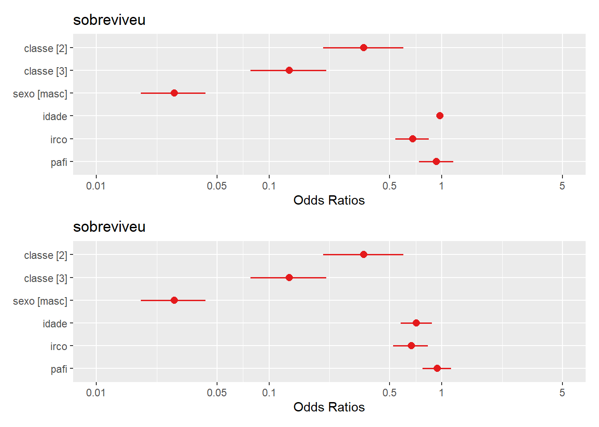
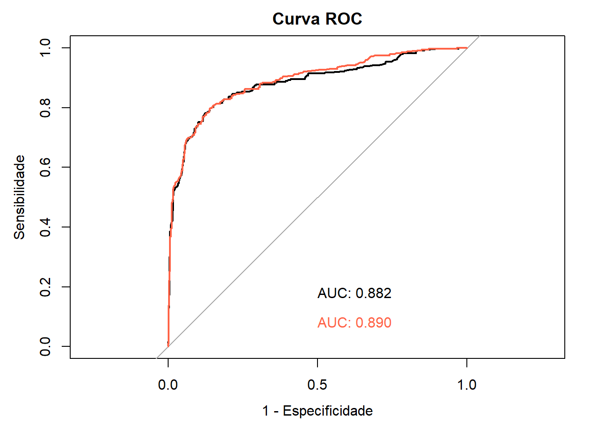
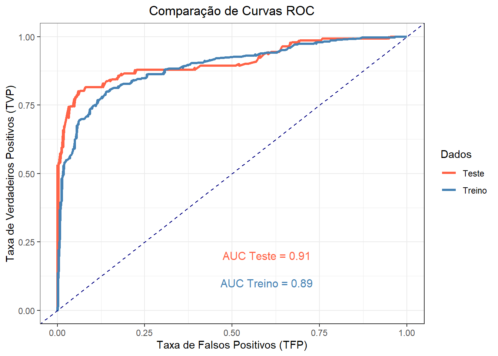
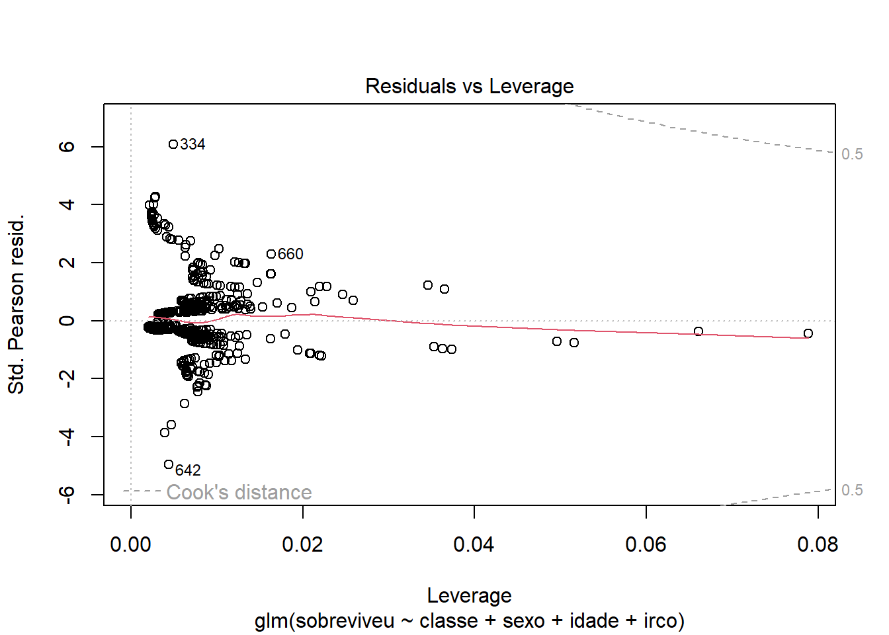

pacman::p_load(BiocManager,
car,
caret,
DescTools,
dplyr,
epiR,
epitools,
flextable,
ggeffects,
ggplot2,
ggpubr,
ggsci,
kableExtra,
knitr,
limma,
mice,
MKmisc,
performance,
pROC,
readxl,
sjPlot,
survival,
survminer,
vcd)18 Estatística em Epidemiologia
18.1 Pacotes necessários
18.2 Raciocínio bayesiano no diagnóstico médico
O processo diagnóstico é o centro da atenção da atividade médica na busca de reduzir as incertezas e reconhecer a que classe pertence determinado paciente. Portanto, é extremamente importante saber quão bem os testes diagnósticos podem prever que um indivíduo é portador de certa condição ou doença. Entende-se aqui como teste diagnóstico todo o processo diagnótico, desde o exame clínico até o mais sofisticado exame de imagem ou laboratorial. A ideia é saber como o teste diagnóstico se comporta para separar um “doente” e um “não doente”; qual a sua validade neste processo?
Deve-se sempre ter em mente que o estabelecimento do diagnóstico é um processo imperfeito que resulta em uma probabilidade ao invés de uma certeza de estar correto. Ou seja, cada vez mais os médicos têm que aplicar as leis da probabilidade na avaliação de testes diagnósticos e sinais clínicos.
A abordagem bayesiana denomina de probabilidade a priori a probabilidade estabelecida inicialmente, baseada apenas na experiência do médico, em seu conhecimento em relação a doença suspeitada. Diante de uma evidência de doença, pode ser solictado um teste diagnóstico. Quando ele recebe um teste positivo para uma doença, a probabilidade muda, passa a ser uma probabilidade condicional, probabilidade da doença dado que o teste é positivo, denominada probabilidade a posteriori.
Um teste que define corretamente quem é doente e quem não é doente é denominado de padrão-ouro ou padrão de referência. Algumas vezes, o teste padrão de referência é simples e barato. Outras vezes, é caro, difícil de obter, tecnicamente complexo, arriscado ou pouco prático. Inclusive, pode não hver padrão-ouro. Em função dessas limitações, outros testes são usados e, como consequência, podem ocorrer erros. Em outras palavras, no processo diagnóstico podem ocorrer falsos positivos e falsos negativos.
Esta incerteza, na utilização de testes diagnósticos, gera a necessidade de o médico conferir a probabilidade de falsos positivos e falsos negativos na elaboração de um diagnóstico ao receber o resultado positivo ou negativo de um exame. Uma maneira simples de mostrar as relações de um teste diagnóstico e o verdadeiro diagnóstico, é mostrada na tabela de contingência \(2\times2\) (Tabela 18.1).

18.2.1 Sensibilidade e Especificidade
As estatísticas mais utilizadas para descrever a validade dos testes de diagnóstico em contextos clínicos são sensibilidade e a especificidade.
Sensibilidade é a habilidade do teste em identificar corretamente quem tem a doença. É a taxa de verdadeiros positivos (VP) de um teste e corresponde a probabilidade de um indivíduo com a doença ter um teste positivo.
Um teste sensível raramente deixará passar pessoas que tenham a doença. Testes com sensibilidade alta são úteis para excluir a presença de uma doença. Isto é, um teste negativo exclui virtualmente a possibilidade de o paciente ter a doença de interesse, pois tem pouca probabilidade de produzir resultados falsos negativos. Isto pode ser lembrado pelo mnemônico SnNout, do inglês: High Sensivity, a Negative result rules out the diagnosis (1).
Especificidade é a habilidade do teste em identificar corretamente quem não tem a doença. É a taxa de verdadeiros negativos (VN) de um teste e corresponde a probabilidade de um indivíduo sem a doença ter um teste negativo. Um teste específico raramente classificará de forma errônea indivíduos sendo portadores da doença quando eles não são. Os testes muito específicos são usados para confirmar a presença da doença. Se o teste é altamente específico, um teste positivo sugere fortemente a presença da doença de interesse.
De forma similar que a sensibilidade pode-se usar o mnemônico SpPin, do inglês: High Specificity, a Positive result rules in the diagnosis (1).
Estas estatísticas de diagnóstico podem ser calculadas a partir das equações, cujas letras representam as caselas da tabela \(2 \times 2\) da Tabela 18.1;
\[ Sensibilidade = \frac {a}{\left (a + c\right )} \quad \quad Especificidade = \frac {d}{\left (b + d\right )} \]
A taxa de falsos negativos (TFN) é a proporção de indivíduos que têm a doença e que têm um resultado de teste negativo e a taxa de falsos positivos (TFP) é a proporção de pacientes que não possuem a doença e que apresentam resultados positivos. Podem ser expressas pelas equações:
\[ TFN= \frac {c}{\left (a + c\right )} \quad ou \quad \left (1 - sensibilidade\right) \]
\[ TFP= \frac {b}{\left (b + d\right )} \quad ou \quad \left (1 - especifcidade\right) \]
Idealmente, um teste de diagnóstico deveria ter altos níveis de sensibilidade e especificidade. No entanto, isso não é possível, pois existe um balanço entre sensibilidade e especificidade. À medida que a especificidade aumenta, a sensibilidade diminui e vice-versa. As curvas ROC podem ser usadas para identificar um ponto de corte em uma medição contínua que maximize a sensibilidade e a especificidade (veja a Seção 18.2.4).
Quando um clínico tem um paciente cujo teste apresentou resultado positivo, a pergunta mais importante é a seguinte: dado que o teste é positivo, qual é a probabilidade de o paciente ter a doença? A sensibilidade do teste não responde a este questionamento, mas sim a probabilidade de um resultado positivo, dado que o paciente tem a doença (2).
18.2.1.1 Exemplo
O conjunto de dados dadosApendicite.xlsx contém informações de 156 pacientes que realizaram ultrassonografia abdominal para o diagnóstico de apendicite aguda.Para obter arquivo, clique aqui e salve o mesmo em seu diretório de trabalho.
Foram avaliados pacientes com diagnóstico clínico de apendicite aguda, submetidos à ultrassonografia abdominal e apendicectomia laparoscópica, acompanhado de estudo anatomopatológico dos apêndices extirpados (3). Será avaliado o teste diagnóstico usado.
Leitura e observação do conjunto de dados
Será usado a função read_excel()do pacote readxl para ler os dados e a função str() para observar a sua estrutura:
dados <- readxl::read_excel ("dados/dadosApendicite.xlsx")
str(dados)tibble [156 × 3] (S3: tbl_df/tbl/data.frame)
$ id : num [1:156] 1 2 3 4 5 6 7 8 9 10 ...
$ apendicite: num [1:156] 1 1 1 1 1 1 1 1 1 1 ...
$ eco : num [1:156] 1 1 1 1 1 1 1 1 1 1 ...As variáveis apendicite e eco foram exibidas como variáveis numéricas e serão transformadas em fatores:
dados$apendicite <- factor(dados$apendicite,
levels = c(1,2),
labels = c("Presente",
"Ausente"))
dados$eco <- factor(dados$eco,
levels = c(1,2),
labels = c("Positivo",
"Negativo"))Construção de uma tabela de contingência 2$$2
tab_ap <- with(dados, table(eco, apendicite, dnn = c ("Eco", "Apendicite")))
addmargins(tab_ap, FUN = sum)Margins computed over dimensions
in the following order:
1: Eco
2: Apendicite Apendicite
Eco Presente Ausente sum
Positivo 85 7 92
Negativo 46 18 64
sum 131 25 156Cálculo da sensibilidade e da especificidade
Pode-se usar a função epi.tests() do pacote epiR (4) que calcula, junto com os intervalos de confiança exatos, a prevalência aparente e verdadeira, sensibilidade, especificidade, valores preditivos positivos e negativos e razões de probabilidade positivas e negativas a partir de dados de contagem fornecidos em uma tabela \(2\times2\). Utiliza os argumentos
- dat dados sob a forma de vetor ou matriz
- conf.level magnitude do intervalode confiança, entre 0 e 1.
Os resultados serão atribuídos a um objeto de nome diag:
diag <- epiR::epi.tests(tab_ap,
conf.level = 0.95)
print(diag) Outcome + Outcome - Total
Test + 85 7 92
Test - 46 18 64
Total 131 25 156
Point estimates and 95% CIs:
--------------------------------------------------------------
Apparent prevalence * 0.59 (0.51, 0.67)
True prevalence * 0.84 (0.77, 0.89)
Sensitivity * 0.65 (0.56, 0.73)
Specificity * 0.72 (0.51, 0.88)
Positive predictive value * 0.92 (0.85, 0.97)
Negative predictive value * 0.28 (0.18, 0.41)
Positive likelihood ratio 2.32 (1.22, 4.40)
Negative likelihood ratio 0.49 (0.35, 0.68)
False T+ proportion for true D- * 0.28 (0.12, 0.49)
False T- proportion for true D+ * 0.35 (0.27, 0.44)
False T+ proportion for T+ * 0.08 (0.03, 0.15)
False T- proportion for T- * 0.72 (0.59, 0.82)
Correctly classified proportion * 0.66 (0.58, 0.73)
--------------------------------------------------------------
* Exact CIsAssim, a sensibilidade é igual a 65% (IC95%: 56 – 73%) e a especificidade é igual a 72% (IC95%: 51 – 88%). Isto significa que um indivíduo com apendicite aguda tem 65% de probabilidade de ter uma ecografia alterada; um indivíduo sem apendicite aguda tem 72% de probabilidade de ter uma ecografia normal. O objetivo do teste de diagnóstico é usá-lo para fazer um diagnóstico, então há necessidade de saber a probabilidade que o teste fornece para um diagnóstico correto. A sensibilidade e a especificidade não fornecem esta informação. Para atingir esse objetivo, usa-se o valor preditivo (5).
18.2.2 Valor Preditivo
O propósito de um teste diagnóstico é usar seus resultados para fazer um diagnóstico, portanto, é necessário conhecer a probabilidade de que o resultado do teste forneça o diagnóstico correto (5).
Os valores preditivos positivo e negativo descrevem a probabilidade de um paciente ter doença, uma vez que os resultados de seus testes são conhecidos.
O valor preditivo positivo (VPP) de um teste é definido como a proporção de pessoas com um resultado de teste positivo que realmente têm a doença.
O valor preditivo negativo (VPN) é a proporção de pacientes com resultados de teste negativos que não têm doença.
Como a sensibilidade e a especificidade, estas estatísticas de diagnóstico também podem ser calculadas a partir da tabela \(2\times2\), mostrada no início:
\[ VPP = \frac {a}{\left (a + b\right )} \quad \quad VPN = \frac {d}{\left (c + d\right )} \]
Observando os resultados anteriores da função epi.tests(), verifica-se que 92% (85/92) dos indivíduos que tiveram teste positivo (ultrassonografia alterada) tinham doença (apendicite aguda). Isso significa que seu VPP é igual a 92% (IC95%: 18 – 41%), ou dito de outra forma, uma pessoa com ultrassonografia positiva tem 92% de probabilidade de ter a apendicite aguda. O VPP é também conhecido como probabilidade pós-teste de doença dado um teste positivo.
Dos 64 pacientes que tiveram ultrassonografia sem alterações, 18 não apresentaram apendicite aguda, portanto, um VPN de 28% (IC95%: 56 – 73%). Isso significa que uma pessoa quem tem um teste negativo tem 28,1% de probabilidade de não ter apendicite aguda.
Entretanto, essas proporções são de validade limitada. Os valores preditivos de um teste, na prática clínica, dependem criticamente da prevalência da anormalidade nos pacientes testados. No estudo, a prevalência de apendicite aguda é igual a
\[ \frac {total\ de\ casos\ de \ apendicite \ aguda}{total\ de\ casos\ no\ estudo} = \frac {131}{156} = 0,84\ ou\ 84\% \left(IC_{95\%}:77\ a\ 89\%\right) \]
Levando-se em consideração que a prevalência de apendicite aguda na população é de 7% (6), mantendo a sensibilidade (64%) e a especificidade (72%) da ultrassonografia, entre 156 pacientes, selecionados aleatoriamente, se esperaria encontrar aproximadamente 11 casos (7% de 156) de apendicite aguda. Para facilitar a compreensão, observe a a tabela \(2\times2\) (Tabela 18.2):

O VPP e o VPN são iguais a:
a <- 7
b <- 41
c <- 4
d <- 104
vpp = a/(a + b)
round(vpp, 3)*100[1] 14.6vpn = d/(c + d)
round(vpn, 3)*100[1] 96.3Ao se comparar o VPP obtido, agora, com o VPP do estudo, observa-se que o mesmo diminuiu bastante, de 92% para 14,6%. O contrário ocorre com a VPN que aumenta substancialmente de 28% para 96,3%, mostrando claramente a influência da prevalência.
Se a prevalência diminui, o VPP diminui e o VPN aumenta. Portanto, será errado aplicar diretamente os valores preditivos publicados de um teste ao seu pacciente, quando a prevalência da doença em sua população for diferente da prevalência da doença na população em que o estudo publicado foi realizado. Um teste pode ser útil em um lugar e não ter validade em outro onde a prevalência é muito baixa.
Pode-se chegar aos mesmos resultados, usando as equações:
\[ VPP =\frac{sens \times prev}{\left(sens \times prev\right) + \left [\left (1- espec\right) \times \left (1- prev\right)\right ]} \]
\[ VPN =\frac{espec\times \left (1- prev\right)}{\left[\left (1 - sens \right)\times prev\right]+\left[espec\times \left (1 - prev\right)\right]} \]
A prevalência pode ser interpretada como a probabilidade antes da realização do teste, conhecida como probabilidade pré-teste. A diferença entre as probabilidades pré e pós-teste é uma forma de avaliar a utilidade do teste. Esta diferença pode ser mensurada pela razão de probabilidade (likelihood ratio).
18.2.3 Razão de Probabilidade
A Razão de Probabilidades (likelihood ratio) é uma forma alternativa de descrever o desempenho de um teste diagnóstico. Alguns autores a denominam de razão de verossimilhança 1.
A razão de probabilidades para um resultado de teste é definida como a razão entre a probabilidade de observar aquele resultado em indivíduos com a doença em questão e a probabilidade desse resultado em indivíduos sem a doença (7).
Razões de probabilidade são, clinicamente, mais úteis do que sensibilidade e especificidade. Fornecem um resumo de quantas vezes mais (ou menos) a probabilidade de os indivíduos com a doença apresentarem aquele resultado específico do que os indivíduos sem a doença, e também podem ser usados para calcular a probabilidade de doença para pacientes individuais (8). Cada vez mais as razões de probabilidade estão se tornando populares para relatar a utilidade dos testes de diagnóstico.
Quando os resultados do teste são relatados como sendo positivos ou negativos, dois tipos de razões de probabilidades podem ser descritos, a razão de probabilidades para um teste positivo (denotada LR +) e a razão de probabilidades para um teste negativo (denotada LR−).
A razão de probabilidades para um teste positivo é definida como a probabilidade de um indivíduo com doença ter um teste positivo dividida pela probabilidade de um indivíduo sem doença ter um teste positivo. A fórmula para calcular LR + é
Ou seja,
\[ LR(+)=\frac{sensibilidade}{1 - especificidade} \]
Razão de probabilidades positiva maior que 1 significa que um teste positivo tem mais probabilidade de ocorrer em pessoas com a doença do que em pessoas sem a doença. De um modo geral, para os indivíduos que apresentam um resultado positivo, LR (+) > 10 aumenta significativamente a probabilidade de doença (“confirma” a doença), enquanto LR (+) < 0,1, virtualmente, exclui a probabilidade de uma pessoa ter a doença (9).
Usando os dados incluídos no objeto diag, obtido com a função epi.tests() do pacote epiR, tem-se que a LR (+) da ultrassonografia para o diagnóstico de apendicite aguda é igual 2.32 (IC95%: 1,22 – 4,40). Significa que uma pessoa com apendicite aguda tem cerca de 2,32 vezes mais probabilidade de ter um teste positivo do que uma pessoa que não tem a doença.
A razão de probabilidade negativa é definida como a probabilidade de um indivíduo com doença ter um teste negativo dividido pela probabilidade de um indivíduo sem doença ter um teste negativo. A fórmula para calcular a LR− é:
Ou seja,
\[ LR(-)=\frac{sensibilidade}{1-especificidade} \]
Razão de probabilidade negativa menor que 1 significa que um teste negativo é menos provável de ocorrer em pessoas com a doença do que em pessoas sem a doença. Um LR muito baixo (abaixo de 0,1) praticamente exclui a chance de que uma pessoa tenha a doença (9).
Voltando aos dados anteriores, a LR (-) para a ultrassonografia é igual a 0.49 (IC95%: 0.35 - 0.68). Significa que a probabilidade de ter um teste negativo para indivíduos com doença é 0,49 vezes ou cerca de metade daqueles sem a doença. Dito de outra forma, os indivíduos sem a doença têm cerca o dobro probabilidade de ter um teste negativo do que os indivíduos com a doença.
18.2.3.1 Estimando a probabilidade de doença
Uma grande vantagem das razões de probabilidade é que elas podem ser usadas para ajudar o médico a adaptar a sensibilidade e a especificidade dos testes aos pacientes individuais. Ao se atender um paciente em uma clínica, pode-se decidir realizar um teste específico, após uma anamnese e um exame físico. A decisão de fazer o teste baseia-se nos sintomas e sinais do paciente e na experiência pessoal. Existe suspeita de um determinado diagnóstico e o objetivo é excluir ou confirmar esse diagnóstico. Antes de solicitar o teste, geralmente existe uma estimativa aproximada da probabilidade do paciente de ter essa doença, conhecida como probabilidade pré-teste ou a priori, que geralmente é estimada com base na experiência pessoal do médico, dados de prevalência local e publicações científicas.
A razão mais importante pela qual um teste é realizado é tentar modificar a probabilidade de doença. Um teste positivo pode aumentar a probabilidade pós-teste e um teste negativo pode reduzir essa probabilidade. A probabilidade pós-teste de doença é o que mais interessa aos médicos e pacientes, pois isso pode ajudar a decidir se devem confirmar, descartar um diagnóstico ou realizar outros testes.
Os resultados dos testes clínicos são geralmente usados não para fazer ou excluir categoricamente um diagnóstico, mas para modificar a probabilidade do pré-teste a fim de gerar a probabilidade do pós-teste. O teorema de Bayes é uma relação matemática que permite estimar a probabilidade pós-teste.
Para se compreender este conceito, é importante entender a diferença entre probabilidade e odds (10).
Probabilidade é a proporção de pessoas que apresentam uma determinada característica (teste positivo, sinal clínico).
Odds (chance) representa a razão entre duas características complementares, ou seja, a probabilidade de um evento dividido pela probabilidade do não evento (1 – evento). Ambos contêm as mesmas informações de maneiras diferentes. Por exemplo, usando os dados da tabela tab_ap (veja Seção 18.2.1.1), verifica-se que a probabilidade (p) de uma ultrassonografia positiva para apendicite aguda é igual
a <- tab_ap[1,1]
b <- tab_ap[1,2]
c <- tab_ap[2,1]
d <- tab_ap[2,2]
p <- (a + b)/(a + b + c + d)
p[1] 0.5897436e que o odds da ultrassonografia positiva2 é
odds <- (a + b)/(c + d)
odds[1] 1.4375Para transformar a odds em probabilidades e vice-versa, procede-se da seguinte maneira:
\[ p=\frac{odds}{1+odds} \]
Voltando ao exemplo (Seção 18.2.1.1):
p = odds/(1 + odds)
p[1] 0.5897436e
\[ odds=\frac{p}{1-p} \]
odds = p/(1-p)
odds[1] 1.4375Pelo teorema de Bayes, sabendo-se a probabilidade a priori ou probabilidade pré-teste, é possível obter a probabilidade pós-teste ou a posteriori, usando a razão de probabilidades.
Para atingir este objetivo, basta, inicialmente, multiplicar o odds pré-teste pela razão de probabilidades:
\[ odds_{pos} = odds_{pre \quad \times \quad LR} \]
Após, para encontrar a probabilidade pós-teste, basta converter o odds pós-teste em probabilidade:
\[ p_{pos} = \frac{odds_{pos}}{1-odds_{pos}} \]
No exemplo (Seção 18.2.1.1), foi verificado que o LR (+) é igual a 2,32 e a prevalência de apendicite aguda é em torno de 7% pode-se prever a probabilidade de haver apendicite aguda, diante de uma ultrassonografia alterada:
prev <- 0.07
LR <- 2.32
odds_pre <- 0.07/(1 -0.07)
odds_pos <- odds_pre * LR
p_pos <- odds_pos/(odds_pos +1)
round(p_pos, 3)[1] 0.149Ou, em outras palavras, diante de um teste positivo, a probabilidade de o paciente ter apendicite aguda passa de 7% antes do teste para praticamente 15%!
Estes cálculos podem ser simplificados, utilizando o nomograma de Fagan (11), extremamente fácil de se usar (12), pois basta unir a probabilidade pré-teste ao LR que a reta apontará para a probabilidade pós-teste (Figura 18.1)).

18.2.4 Curva ROC
Nem sempre o resultado de um teste é dicotômico (positivo/negativo). Com frequência, trabalha-se com variáveis contínuas (pressão arterial, glicemia, dosagem do sódio, dosagens hormonais, etc.). Neste caso, não há um resultado “positivo” ou “negativo”. Um “ponto de corte” precisa ser criado, para definir quem será considerado positivo ou negativo.
A escolha do ponto de corte depende das consequências de um resultado falso positivo ou de um falso negativo. Falsos positivos estão associados com custos (emocional ou financeiro) e com a dificuldade de “desrotular” alguém que recebeu o rótulo de “positivo”. Resultados falsos negativos podem “tranquilizar” pessoas doentes que não são seguidas ou tratadas precocemente.
A distribuição dos níveis glicêmicos em diabéticos e não diabéticos não tem um ponto de corte bem nítido. As duas populações se sobrepõem (Figura 18.2)), gerando falso positivos ou falso negativos, dependendo do ponto de corte escolhido (10).

Suponha que ao se examinar uma população fosse escolhido o ponto de corte de 80mg/dL, haveria um aumento no número de indivíduos com teste positivo com uma taxa de falsos positivos elevada, diminuindo a especificidade do teste. Se, por outro lado, o ponto de corte fosse elevado para 200mg/dL, o número de falsos negativos teria um grande aumento, reduzindo a sensibilidade. Esta oscilação entre a sensibilidade e a especificidade ocorre pelo fato de a localização do ponto de corte ser uma decisão arbitrária num contínuo entre o normal e anormal.
Ao se escolher um ponto de corte deve-se fazer um balanço entre a sensibilidade e a especificidade, levando em conta as consequências da escolha. Por exemplo, a triagem para fenilcetonúria em recém-nascidos valoriza a sensibilidade em vez de especificidade; o custo da perda de um caso é alto, pois existe tratamento eficaz. Uma desvantagem é que ocorre um grande número de testes falso positivos que causam angústia e a realização de mais testes.
Em contraste, a triagem para o câncer de mama deve favorecer a especificidade sobre a sensibilidade, uma vez que uma avaliação mais aprofundada daquelas com teste positivo, implica em biopsias dispendiosas e invasivas.
As curvas ROC (Receiver Operating Characteristic) são uma ferramenta inestimável para encontrar o ponto de corte em uma medida com distribuição contínua que melhor prediz se uma condição está presente, por exemplo, se pacientes são positivos ou negativos para a presença de uma doença (13). As curvas ROC são usadas para encontrar um ponto de corte que separa um resultado de teste “normal” de um “anormal” quando o resultado do teste é uma medida contínua. As curvas ROC são traçadas calculando a sensibilidade e a especificidade do teste na predição do diagnóstico para cada valor da medida. A curva permite determinar um ponto de corte para a medição que maximiza a taxa de verdadeiros positivos (sensibilidade) e minimiza a taxa de falsos positivos (1 – especificidade) e, portanto, maximiza a razão de probabilidades (likelihood ratio).
18.2.4.1 Exemplo
O conjunto de dados dadosTestes.xlsx contém informações para os resultados hipotéticos de três testes bioquímicos diferentes e uma variável (doença) que indica se foi confirmada a doença (padrão-ouro). Para obter arquivo, clique aqui e salve o mesmo em seu diretório de trabalho.
Leitura e observação dos dados
Como é um arquivo em Excel, a leitura será realizada pela função read_excel() do pacote readxl:
testes <- readxl::read_excel("dados/dadosTestes.xlsx")
str(testes)tibble [145 × 5] (S3: tbl_df/tbl/data.frame)
$ id : num [1:145] 1 2 3 4 5 6 7 8 9 10 ...
$ teste1: num [1:145] 25 2.2 46.2 9.9 46.5 36.1 34.8 44.9 36.9 7.1 ...
$ teste2: num [1:145] 25 2.2 15.6 20.4 15.7 35.7 34.8 55.4 36.9 7.1 ...
$ teste3: num [1:145] 15 2.2 25 20.4 15.7 36.1 24 55.4 36.9 7.1 ...
$ doenca: num [1:145] 2 2 1 1 2 2 2 1 2 2 ...A variável doença será transformada em fator:
testes$doenca <- as.factor(testes$doenca)As curvas ROC são usadas para avaliar qual teste é mais útil para prever quais pacientes serão positivos para a doença. A hipótese nula é que a área sob a curva ROC é igual a 0,5, ou seja, a habilidade do teste para identificar casos positivos e negativos é a esperada por acaso.
A Figura 18.3 mostra a quantidade de sobreposição na distribuição da medição dos testes bioquímicos contínuos em ambos os grupos doença positiva e doença negativa. No Teste 1, a sobreposição é completa e não haverá um ponto de corte que separe efetivamente os dois grupos. Nos Testes 2 e 3, há uma maior separação das medidas de teste entre os grupos, particularmente para Teste 3.

18.2.4.2 Construção da curva ROC
A validade dos testes, na distinção entre os grupos doença-positivo e doença-negativo, pode ser quantificada pelas curvas ROC, usando a função roc() do pacote pROC (14). Este pacote tem várias funções:
- auc: calcula a área da curva ROC;
- ci: calcula o intervalo de confiança da curva ROC;
- ci.auc: calcula o intervalo de confiança da AUC;
- ci.se: calcula o intervalo de confiança de sensibilidades em determinadas especificidades;
- ci.sp: calcula o intervalo de confiança de especificidades em determinadas sensibilidades;
- ci.thresholds: calcula o intervalo de confiança dos limites;
- coords: Retorna as coordenadas (sensibilidades, especificidades, pontos de corte) de uma curva ROC;
- roc: Constroi uma curva ROC;
- roc.test: Compara a AUC de duas curvas ROC correlacionadas;
- smooth: suaviza a curva ROC
Usar a função com os argumentos variável resposta (doenca), variável preditora (teste3, teste2 e teste1), indicação de que o gráfico deve ser desenhado (plot = TRUE). Como por padrão o gráfico é plotado com a sensibilidade no eixo x e a especificidade no eixo y; deve-se acrescentar o argumento legacy.axes = TRUE para aparecer o seu complemento, os falsos positivos (\(1 – especificidade\)).
Além desses, pode-se usar vários outros argumentos como: print.auc = TRUE, que imprime no gráfico a AUC e ci que é o intervalo de confiança da AUC. Para que a sensibilidade e especificidade apareçam como uma percentagem, deve-se usar o argumento percent = TRUE, pois o padrão é FALSE. Os demais argumentos são os rótulos dos eixos, cor da curva, largura da curva (lwd).
roc3 <- roc (testes$doenca,
testes$teste3,
plot=TRUE,
quiet = TRUE,
legacy.axes=TRUE,
print.auc=TRUE,
print.auc.y = 0.2,
ci = TRUE,
ylab="Sensibilidade",
xlab="1 - Especificdade",
col="steelblue",
smooth = TRUE,
lwd=2)
roc2 <- roc (testes$doenca,
testes$teste2,
plot=TRUE,
quiet = TRUE,
legacy.axes=TRUE,
print.auc=TRUE,
ci = TRUE,
print.auc.y=0.13,
col="chartreuse4",
lwd=2,
smooth = TRUE,
add=TRUE)
roc1 <- roc (testes$doenca,
testes$teste1,
plot=TRUE,
quiet = TRUE,
legacy.axes=TRUE,
print.auc=TRUE,
ci = TRUE,
print.auc.y=0.06,
col="tomato",
lwd=2,
smooth = TRUE,
add=TRUE)
# Legendas das curvas ROC
text (0.73,0.80,"Teste 3", col="steelblue", cex = 1)
text (0.53,0.73,"Teste 2", col="chartreuse4", cex = 1)
text (0.35,0.65,"Teste 1", col="tomato", cex = 1) Interpretação do resultado
Em uma curva ROC, a sensibilidade é calculada usando cada valor do teste no conjunto de dados como um ponto de corte e é plotada em relação à (1 – especificidade) correspondente nesse ponto, como mostrado na Figura 18.4.
Assim, a curva são os Verdadeiros Positivos (VP) plotados em relação aos Falsos Positivos (FP), calculados usando cada valor do teste como ponto de corte. A reta diagonal indica onde o teste cairia se os resultados não fossem melhores do que o acaso para predizer a presença de uma doença. O Teste 1 está próximo desta reta, confirmando que ele tem pouca capacidade de discriminar os pacientes doentes e não doentes.
A área abaixo da reta diagonal é equivalente a 0,5 da área total. Quanto maior a área sob a curva ROC, mais útil é o teste para predizer os pacientes que têm a doença. Uma curva que cai substancialmente abaixo da linha diagonal indica que o teste tem pouca capacidade de diagnosticar a doença. Quando há uma separação perfeita dos valores dos dois grupos, isto é, sem sobreposição das distribuições, a área sob a curva ROC é igual a 1 (a curva ROC alcançará o canto superior esquerdo do gráfico).
A área sob a curva (Area Under the Curve – AUC) e seu intervalo de confiança de 95% podem ser obtidos com os comandos usados na construção da Figura 18.4 ou separadamente usando as funções auc() e ci.auc() do pacote pROC.
auc (roc1) Area under the curve: 0.5891ci.auc (roc1)95% CI: 0.4861-0.6814 (2000 stratified bootstrap replicates)auc(roc2) Area under the curve: 0.7616ci.auc(roc2)95% CI: 0.6761-0.8398 (2000 stratified bootstrap replicates)auc (roc3) Area under the curve: 0.898ci.auc(roc3)95% CI: 0.8358-0.939 (2000 stratified bootstrap replicates)A acurácia geral de um teste pode ser descrita como a área sob a curva; quanto maior for a área, melhor será o teste. Na Figura 18.4, o Teste 3 tem uma AUC maior que os outros dois testes.
Usa-se a seguinte estimativa (Tabela 18.3) para avaliar a acurácia de um teste ou da capacidade de identificar corretamente uma condição usando curva ROC (15):
AUC | Qualidade do Teste |
|---|---|
>0,90 | excelente |
0,80 a 0,90 | muito bom |
0,70 a 0,80 | bom |
0,60 a 0,70 | suficiente |
0,50 a 0,60 | ruim |
<0,50 | ignorar teste |
Desta forma, o Teste 3 pode ser considerado um bom teste e o Teste 1 é um teste ruim.
Comparando duas curvas
Pode-se comparar duas curvas ROC com a função roc.test(), por exemplo, comparando as curvas dos Teste 3 e 2 (16):
roc.test(roc3, roc2)
Bootstrap test for two correlated ROC curves
data: roc3 and roc2
D = 4.6305, boot.n = 2000, boot.stratified = 1, p-value = 3.648e-06
alternative hypothesis: true difference in AUC is not equal to 0
sample estimates:
Smoothed AUC of roc1 Smoothed AUC of roc2
0.8980454 0.7616201 O Teste 3 tem uma AUC que o caracteriza como um bom teste e o teste de DeLong, entregue na saída do roc.test(), resultou que a diferença entre ele o Teste 2 é estatisticamente significativa (P < 0,0001).
18.2.4.3 Melhor ponto de corte
O melhor ponto de corte (Best Critical Value), que às vezes é chamado de ponto de diagnóstico ótimo ou de Youden, é o ponto da curva mais próximo da parte superior do eixo y (Figura 18.4, Teste 3). Este é o ponto em que a taxa de verdadeiros positivos é otimizada e a taxa de falsos positivos é minimizada. O melhor ponto de corte para o Teste 3 é mostrado na Figura 18.5. Este melhor ponto de corte pode ser identificado a partir dos pontos de coordenadas da curva, usando a função roc() com os seguintes argumentos:
best <- roc (testes$doenca,
testes$teste3,
plot = TRUE,
ci=TRUE,
thresholds="best",
print.thres="best",
legacy.axes=TRUE,
main="",
ylab="Sensibilidade",
xlab="1 - Especificidade",
col="steelblue",
lwd=2)
best
Call:
roc.default(response = testes$doenca, predictor = testes$teste3, ci = TRUE, plot = TRUE, thresholds = "best", print.thres = "best", legacy.axes = TRUE, main = "", ylab = "Sensibilidade", xlab = "1 - Especificidade", col = "steelblue", lwd = 2)
Data: testes$teste3 in 48 controls (testes$doenca 1) > 97 cases (testes$doenca 2).
Area under the curve: 0.8973
95% CI: 0.8444-0.9502 (DeLong)Assim, para o Teste 3, o ponto de corte ideal é 24,8, onde a especificidade é igual a 0,854 e a sensibilidade é igual 0,845. Estes dados, fornecem um LR para um resultado positivo igual a:
\[ LR \left(+\right) = \frac{0.845}{\left (1-0.854\right)} = 5,79 \]
As coordenadas da curva ROC podem ser obtida com a seguinte programação, a partir de uma sensibilidade e especificidade acima de 0 (zero):
coordenadas <- testes %>% roc(doenca, teste3) %>% coords (transpose = F)
head(coordenadas, 10) threshold specificity sensitivity
1 Inf 0.00000000 1
2 57.50 0.02083333 1
3 54.65 0.04166667 1
4 53.45 0.06250000 1
5 52.80 0.08333333 1
6 51.30 0.10416667 1
7 49.65 0.12500000 1
8 48.65 0.16666667 1
9 47.50 0.18750000 1
10 46.50 0.35416667 1A estatística J de Youden (17) é calculada deduzindo 1 a partir da soma de sensibilidade e especificidade do teste e não é expressa como porcentagem, mas como parte de um número inteiro: \(\left (sensibilidade + especificidade\right) - 1\). A estatística J de Youden no melhor ponto de corte do Teste 3 é igual a \(\left (0,845+ 0,854\right) - 1 = 0,699\).
Este é o maior valor de todos os valores das coordenadas (91 valores) usadas.
youden <- max(coordenadas$sensitivity + coordenadas$specificity) - 1
youden[1] 0.6995275A Figura 18.5 mostra o ponto de corte ideal. Ele também pode ser obtido com a função coords() do pacote pRoc:
roc3 <- testes %>% roc(doenca, teste3)
coords(roc3, x = "best", ret="threshold", transpose = FALSE,
best.method="youden") threshold
1 24.8O método para obter o melhor ponto de corte (best.method) pode ser pelo método de youden ou closest.topleft. No exemplo, o resultado é o mesmo. Para maiores detalhes consulte a ajuda da função coord(), do pacote pROC.
18.3 Estatística kappa
A estatística de concordância kappa (k) de Cohen é utilizada para descrever a concordância entre dois ou mais avaliadores quando realizam uma avaliação nominal ou ordinal de uma mesma amostra (18). A estatística kappa corrige a chance do acaso nas avaliações e é obtida pela fórmula igual a:
\[ k= \frac{p_{o} - p_{e}}{1 - p_{e}} \]
Onde \(p_{o}\) = proporção observada de concordância e \(p_{e}\) = proporção esperada de concordância apenas pelo acaso.
Por exemplo, dois radiologistas podem revisar independentemente uma série de radiografias do tórax de pacientes para determinar a presença ou ausência de pneumonia. Para avaliar o grau de concordância entre as classificações dos dois médicos, pode ser relatado o percentual de concordância entre os avaliadores (por exemplo, 50% dos avaliadores responderam “sim” nas duas ocasiões). No entanto, esse percentual pode ser enganoso, pois não leva em conta o nível de concordância entre os dois avaliadores que pode ocorrer por acaso. A estatística kappa pode ser usada para avaliar a concordância das respostas para dois ou mais avaliadores após considerar a concordância casual. Portanto, a estatística kappa é uma estimativa da proporção de concordância entre avaliadores que excede a concordância que ocorreria por acaso.
A interpretação dos valores de kappa é mostrada na Tabela 18.4 (19). Quando a proporção observada de concordância é menor que a esperada por acaso, o kappa terá um valor negativo indicando não concordância. Um valor de kappa igual a 0 indica que a concordância observada é igual à concordância casual.
O teste de hipóteses testa a hipótese de que a concordância entre os dois avaliadores seja puramente aleatória. Quando o valor P é menor que 0,05, rejeitamos a hipótese de que a concordância foi puramente aleatória. As premissas para o kappa de Cohen são que os participantes ou itens a serem classificados são independentes e também que os avaliadores e categorias são independentes.
Valor kappa | Concordância |
|---|---|
<0,00 | pobre |
0,00 - 0,20 | leve |
0,21 - 0,40 | razoável |
0,41 - 0,60 | moderada |
0,61 - 0,80 | substancial |
0,81 - 1,00 | quase perfeita |
Existem diferentes tipos de estatísticas kappa. Para dados com três ou mais categorias possíveis (por exemplo, concordo, concordo parcialmente, discordo) ou para dados categóricos ordenados, o kappa ponderado deve ser usado para que as respostas que estão mais distantes da concordância tenham maior peso do que aquelas próximas à concordância. No exemplo usado, as categorias possíveis são dicotômicas (sim e não), portanto, o kappa não ponderado (unweighted) e o ponderado (weighted) retornam o mesmo resultado.
18.3.1 Exemplo
O arquivo dadosPneumonia.xlsx contém os dados de 54 crianças com suspeita de pneumonia, cujas radiografias foram avaliadas por dois radiologistas. O objetivo foi medir a concordância diagnóstica dos dois profissionais. Para o cálculo do coeficiente kappa, será usada a função Kappa() do pacote vcd (20). Essa função tem os seguintes argumentos:
- x \(\longrightarrow\) matriz ou tabela
- weights \(\longrightarrow\) matriz especificada pelo usuário com as mesmas dimensões de x, desnecessário para kappa não ponderado.
Na impressão do kappa pode-se usar print (k, digits = 3, CI = TRUE, level = 0.95). Onde k é o coeficiente de kappa, calculado pela função Kappa(), CI é o intervalo de confiança e o nível de confiança padrão é 95%.
18.3.1.1 Leitura e exploração dos dados
O conjunto de dados dadosPneumonia.xlsx pode ser obtido aqui. Após salvar o arquivo em seu diretório, ele pode ser carregado com a função read_excel() do pacote readxl:
dados <- readxl::read_excel("dados/dadosPneumonia.xlsx")18.3.1.2 Construção da tabela
O cálculo do kappa com a função Kappa() exige uma tabela, onde os dados dos dois radiologistas são cruzados. As variáveis a serem cruzadas são rx1 e rx2:
dados$rx1 <- factor(dados$rx1,
ordered=TRUE,
levels = c("sim", "não"))
dados$rx2 <- factor(dados$rx2,
ordered=TRUE,
levels = c("sim", "não"))
tabk <- with(dados, table(rx1, rx2, dnn = c ("Radiologista 1", "Radiologista 2")))
addmargins(tabk, FUN = sum)Margins computed over dimensions
in the following order:
1: Radiologista 1
2: Radiologista 2 Radiologista 2
Radiologista 1 sim não sum
sim 32 5 37
não 3 14 17
sum 35 19 5418.3.1.3 Cálculo do kappa
O kappa é dado pela execução da função:
k <- vcd::Kappa(tabk)
print (k,
digits= 3,
CI=TRUE,
level=0.95) value ASE z Pr(>|z|) lower upper
Unweighted 0.667 0.107 6.21 5.42e-10 0.456 0.878
Weighted 0.667 0.107 6.21 5.42e-10 0.456 0.878A saída exibe o kappa pontual e os intervalos de confiança de 95%, podendo-se concluir, desses resultados, que existe uma boa confiabilidade nos diagnósticos dos radiologistas (k = 0,67, concordância substancial,de acordo com a Tabela 18.4.
18.4 Medidas de frequência
18.4.1 Prevalência
A prevalência, ou mais adequadamente, a prevalência pontual de uma doença é a proporção da população portadora da doença em um determinado ponto do tempo. É uma medida instantânea por excelência e fornece uma medida estática da frequência da doença. É também conhecida como taxa de prevalência e é expressa em percentagem ou por \(10^{n}\) habitantes. As medidas de prevalência geram informações úteis para o planejamento e administração de serviços de saúde.
A prevalência por período descreve os casos que estavam presentes em qualquer momento durante um determinado período de tempo. Diz o número total de casos de uma doença que se sabe haver existido durante um período de tempo.
Um tipo especial de prevalência de período é a prevalência ao longo da vida, que mede a frequência cumulativa ao longo da vida de um resultado até o momento presente (ou seja, a proporção de pessoas que tiveram o evento em qualquer momento no passado).
As doenças, quanto a sua duração, podem ser agudas e de longa duração ou crônicas. A prevalência é proporcional ao tempo de duração da doença. Hipoteticamente, se o surgimento de novos casos de doença ocorre em ritmo constante e igual para doenças agudas e crônicas, estas últimas acumularão casos, aumentando a prevalência. As doenças agudas tenderão a manter uma prevalência constante. A terapêutica, diminuindo o tempo de duração das doenças, também reduz a prevalência. A prevalência é dada pela razão:
\[ prevalência = \frac{número \ de \ casos \ conhecidos \ da \ doença}{total \ da \ População} \times 10^{n} \]
18.4.1.1 Exemplo
Como exemplo, será verificada a frequência de tabagismo entre as puérperas da maternidade do HGCS. O banco de dados dadosMater.xlsx contém informação de 1368 nascimentos e pode ser consultado na Seção 5.3. Clique aqui para baixar e depois de salvar em seu diretório de trabalho, carregue-o com a função read_excel() do pacote readxl.
dados <- readxl::read_excel ("dados/dadosMater.xlsx")Inicialmente, será verificado quantas fumantes existem. O conjunto de dados contém uma variável fumo, onde 1 = fumante e 2 = não fumante. Portanto, há necessidade de transformar a variável numérica em um fator:
dados$fumo <- factor (dados$fumo,
ordered = TRUE,
levels = c(1,2),
labels = c("fumante", "não fumante"))
tabFumo <- with(data = dados, table(fumo))
addmargins(tabFumo, FUN = sum)fumo
fumante não fumante sum
301 1067 1368 Além de relatar a estimativa pontual da frequência da doença, é importante fornecer uma indicação da incerteza em torno dessa estimativa pontual. A função epi.conf(), do pacote epiR (4), permite calcular intervalos de confiança para prevalência, motivo da escolha dessa função.
A função epi.conf() usa os seguintes argumentos:
- dat \(\longrightarrow\) matriz ou tabela;
- ctype \(\longrightarrow\) tipo de intervalo de confiança a ser calculado. Opções: mean.single, mean.unpair, mean.pair, prop.single, prop.unpaired, prevalence, inc.risk, inc.rate, odds e smr (standardized mortality rate);
- method \(\longrightarrow\) método a ser usado. Quando
ctype = "inc.risk"ouctype = "prevalence", as opções sãoexact,wilsonefleissQuandoctype = "inc.rate"as opções sãoexactebyar; - N \(\longrightarrow\) tamanho da população;
- conf.level \(\longrightarrow\) magnitude do intervalo de confiança retornado. Deve ser um único número entre 0 e 1.
Construção da matriz
Com os dados da tabFumo, constrói-se uma matriz de duas colunas:
n1 <- tabFumo[1]
N1 <- tabFumo[1] + tabFumo[2]
mat1 <- as.matrix(cbind (n1, N1))
mat1 n1 N1
fumante 301 1368Cálculo da prevalência
Usando a função epiR(), tem-se:
epiR::epi.conf(mat1,
ctype = "prevalence",
method = "exact",
conf.level = 0.95) est lower upper
1 0.2200292 0.1983313 0.2429365A saída mostra que a prevalência de fumantes entre as puérperas do HGCS é igual a 22,0% (IC95%: 19,8 – 24,3%).
18.4.2 Incidência
A incidência fornece uma medida da frequência com que os indivíduos suscetíveis se tornam casos de doenças, à medida que são observados ao longo do tempo.
Um caso incidente ocorre quando um indivíduo deixa de ser suscetível e passa a ser doente. A contagem de casos incidentes é o número de tais eventos que ocorrem em uma população durante um período de acompanhamento definido. Existem duas maneiras de expressar a incidência:
A incidência cumulativa (risco) é a proporção de indivíduos inicialmente suscetíveis em uma população que se tornam novos casos durante um período de acompanhamento definido.
Para calcular a incidência cumulativa, é necessário primeiro identificar os doentes e após acompanhar por um determinado tempo os não doentes (Figura 18.6).

A taxa de incidência (densidade de incidência ou taxa de incidência) é o número de novos casos da doença que ocorrem por unidade de tempo em risco durante um período de acompanhamento definido. Este período é expresso como pessoas-tempo (pessoas-ano, por exemplo).
O conceito de pessoas-tempo pode ser ilustrado com o seguinte exemplo: a Figura 18.7 representa um estudo epidemiológico hipotético com duração de cinco anos, onde D é o desfecho e C representa os sujeitos que deixaram o estudo por migração ou morte (censurados) por causa não relacionada ao desfecho

Nesse estudo hipotético, o indivíduo 1 permaneceu no estudo 3,5 anos; o indivíduo 2, ficou 5 anos; o indivíduo 3, 4,5 anos e, assim por diante, totalizando 32,5 pessoas-anos. Em outras palavras, ocorreram 4 desfechos durante os 5 anos do estudo, consequentemente, a taxa de incidência (TI) foi de
\[ TI = \frac{4}{32,5} \times 1000 = \frac{123}{1000\ pessoas-ano} \]
Isto significa que se fossem acompanhadas 1000 pessoas por um ano, 123 delas apresentariam o desfecho D.
18.4.2.1 Exemplo
Aparentemente, pessoas cegas tem uma menor incidência de câncer e esse efeito parece ser mais pronunciado em pessoas totalmente cegas do que em pessoas com deficiência visual grave.
Para testar essa hipótese, foi identificada uma coorte de 1.567 pessoas totalmente cegas e 13.292 sujeitos com deficiência visual grave. As informações sobre a incidência de câncer foram obtidas do Registro Sueco de Câncer (21). Foram diagnosticados de 136 casos de câncer em 22050 pessoas-ano em risco totalmente cegas e 1709 casos de câncer em 127650 pessoas-anos em risco com deficiência visual grave.
A taxa de incidência pode ser calculada, usando-se a mesma função epi.conf(), usada para o cálculo da prevalência, mudando o argumento ctype = “prevalence” para ctype = “inc.rate”, conforme recomendado:
Pessoas totalmente cegas
Inicialmente, contrói-se a matriz:
n2 <- 136
N2 <- 22050
mat2 <- as.matrix(cbind (n2, N2))
mat2 n2 N2
[1,] 136 22050Logo, a incidência de câncer nos totalmente cegos é:
epiR::epi.conf(mat2,
ctype = "inc.rate",
method = "exact",
conf.level = 0.95)*1000 est lower upper
n2 6.1678 5.174806 7.295817Pessoas com grave deficiência visual
Inicialmente, contrói-se a matriz:
n3 <- 1709
N3 <- 127650
mat3 <- as.matrix(cbind (n3, N3))
mat3 n3 N3
[1,] 1709 127650Logo, a incidência de câncer nos com grave deficiência visual é:
epiR::epi.conf(mat3,
ctype = "inc.rate",
method = "exact",
conf.level = 0.95)*1000 est lower upper
n3 13.38817 12.76088 14.03832As saídas mostram que para cada 1000 pessoas cegas (a função foi multiplicada por 1000) acompanhadas por um ano, ocorreu 6,2 ((IC95%: 5,2 – 7,3) casos de câncer. Uma taxa de incidência, praticamente, metade da taxa de incidências das pessoas com deficiência visual grave. Os IC95% não são coincidentes, o que significa que essa diferença é significativa. Houve, na amostra, uma incidência menor de câncer entre os indivíduos totalmente cegos, sugerindo que a melatonina possa ser um fator protetor contra o câncer.
18.4.3 Relação entre prevalência e incidência
A incidência é uma medida de risco. A prevalência, por não levar em consideração o tempo de duração da doença (t), não tem esta capacidade. Em uma população onde a situação da doença encontra-se em estado estacionário (ou seja, sem grandes migrações ou mudanças ao longo do tempo na incidência/prevalência), a relação entre prevalência e incidência e duração da doença pode ser expressa pela seguinte fórmula (22):
\[ prevalência \ pontual = incidência \times duração \ da \ doença \ (t) \]
Por exemplo, se a incidência da doença for de 0,8% ao ano e sua duração média (sobrevida após o diagnóstico) for de 10 anos, a prevalência pontual será de aproximadamente 8%.
18.5 Medidas de associação
18.5.1 Odds Ratio
Odds Ratio (OR) é a razão entre dois odds. A Odds Ratio, traduzida como Razão de Chances, está associada, usualmente, com estudos retrospectivos tipo caso-controle com desfechos dicotômicos.
A odds ratio (OR) expressa a odds de exposição entre os que têm o desfecho (casos) pela odds de exposição nos livres de desfecho (controles).

Usando a Tabela 18.5, a fórmula \(odds =\frac{p}{1 -p}\) e que
\[ p_{exp \ doentes} = \frac{a}{a+c} \] \[ p_{exp \ não \ doentes} = \frac{b}{b+d} \] tem-se:
\[ odds_{exp} \ {casos} = \frac{\frac{a}{a+c}}{1- \frac{a}{a+c}}=\frac{a}{c} \]
\[ odds_{exp} \ {controles} = \frac{\frac{b}{b+d}}{1- \frac{b}{b+d}}=\frac{b}{d} \]
Portanto, a OR é igual a:
\[ OR = \frac{odds_{exp}\ {casos}}{odds_{exp}\ {controles}}=\frac{\frac{a}{c}}{\frac{b}{d}}=\frac{a \times d}{c \times b} \]
Em decorrência da última fórmula, a OR é definida como a razão dos produtos cruzados em uma tabela de contingência 2×2.
18.5.1.1 Exemplo
Em um estudo de caso-controle hipotético, a distribuição das exposições entre os casos e um grupo de pessoas saudáveis (“controles”) é comparada entre si. Os casos correspondem a um tipo raro de câncer, onde se suspeita que exista uma associação à exposição a um determinado fator de risco.
Os dados desse estudo hipotético estão no arquivo dadosCasoControle.xlsx. O conjunto de dados pode ser obtido aqui. Depois de salvo em seu diretório de trabalho, ele pode ser carregado com a função read_excel() do pacote readxl.
cc <- readxl::read_excel ("dados/dadosCasoControle.xlsx")As variáveis cc$exposto e cc$desfecho devem ser transformadas em fatores e na ordem sim, não, uma vez que o R coloca em ordem alfabética (não, sim):
cc$exposto <- factor (cc$exposto,
levels = c("sim", "não"))
cc$desfecho <- factor (cc$desfecho,
levels = c("sim", "não"))Após essa etapa, construir uma tabela \(2 \times 2\):
tab_cc <- table (cc$exposto,
cc$desfecho,
dnn = c("Exposição", "Desfecho"))
addmargins(tab_cc) Desfecho
Exposição sim não Sum
sim 48 20 68
não 12 40 52
Sum 60 60 120A OR será obtida utilizando a função epi.2by2() do pacote epiR (4). Esta função tem os seguintes argumentos:
- dat \(\longrightarrow\) tabela de contingência \(2 \times 2\);
- method \(\longrightarrow\) as opções são “cohort.count”, “cohort.time”, “case.control” ou “cross.sectional”.;
- conf.level \(\longrightarrow\) padrão = 0.95;
- units \(\longrightarrow\) multiplicador para incidência e prevalência;
- outcome \(\longrightarrow\) indicação de como a variável desfecho é representada na tabela de contingência (“as.columns” ou “as.rows”).
epiR::epi.2by2(tab_cc,
method = "case.control",
conf.level = 0.95,
units = 100,
outcome = "as.columns") Outcome + Outcome - Total Odds
Exposed + 48 20 68 2.40 (1.43 to 4.23)
Exposed - 12 40 52 0.30 (0.13 to 0.53)
Total 60 60 120 1.00 (0.69 to 1.45)
Point estimates and 95% CIs:
-------------------------------------------------------------------
Exposure odds ratio 8.00 (3.49, 18.34)
Attrib fraction (est) in the exposed (%) 87.24 (69.26, 95.03)
Attrib fraction (est) in the population (%) 70.00 (48.69, 82.46)
-------------------------------------------------------------------
Uncorrected chi2 test that OR = 1: chi2(1) = 26.606 Pr>chi2 = <0.001
Fisher exact test that OR = 1: Pr>chi2 = <0.001
Wald confidence limits
CI: confidence intervalA saída exibe os dados em uma tabela \(2 \times 2\), mostrando as odds e os IC95% e outras estatísticas epidemiológicas relacionadas.
A OR varia de zero ao infinito. Quando o valor da OR se aproxima de 1, a doença e o fator de risco não estão associados. Acima de 1 significa que existe associação e valores menores de 1 indicam uma associação negativa (efeito protetor).
No exemplo hipotético, os indivíduos que se expuseram ao fator de risco têm uma chance 8 vezes maior de apresentar este tipo de câncer. O valor P do qui-quadrado é altamente significativo (P < 0,001).
18.5.2 Risco Relativo
O Risco relativo (RR) é a razão entre a incidência de desfecho em indivíduos expostos e a incidência de desfecho em indivíduos não expostos. O RR estima a magnitude da associação entre a exposição e o desfecho (doença). Em outras palavras, compara a probabilidade de ocorrência do desfecho entre os indivíduos expostos com a probabilidade de ocorrência do desfecho nos indivíduos não expostos.
A partir da tabela de contingência \(2 \times 2\) (Tabela 18.5), tem-se que o estimador do RR é dado por:
\[ RR = \frac{incidência_{exp}}{incidência_{não \ exp}}=\frac{\frac{a}{a + b}}{\frac{c}{c + d}} \]
18.5.2.1 Exemplo
Em 1940, ocorreu um surto de gastroenterite, após um jantar, em uma igreja, na cidade de Lycoming, Condado de Oswego, Nova York. Das 80 pessoas presentes, 75 foram entrevistadas. Quarenta e seis relataram doença gastrointestinal, atendendo à definição de caso.
As taxas de ataque (incidência) foram calculadas para aqueles que comeram e não comeram cada um dos 14 itens alimentares consumidos na ceia (23). O pacote epitools (24) contém os dados desta investigação no arquivo oswego.
data(oswego)
str(oswego)'data.frame': 75 obs. of 21 variables:
$ id : int 2 3 4 6 7 8 9 10 14 16 ...
$ age : int 52 65 59 63 70 40 15 33 10 32 ...
$ sex : chr "F" "M" "F" "F" ...
$ meal.time : chr "8:00 PM" "6:30 PM" "6:30 PM" "7:30 PM" ...
$ ill : chr "Y" "Y" "Y" "Y" ...
$ onset.date : chr "4/19" "4/19" "4/19" "4/18" ...
$ onset.time : chr "12:30 AM" "12:30 AM" "12:30 AM" "10:30 PM" ...
$ baked.ham : chr "Y" "Y" "Y" "Y" ...
$ spinach : chr "Y" "Y" "Y" "Y" ...
$ mashed.potato : chr "Y" "Y" "N" "N" ...
$ cabbage.salad : chr "N" "Y" "N" "Y" ...
$ jello : chr "N" "N" "N" "Y" ...
$ rolls : chr "Y" "N" "N" "N" ...
$ brown.bread : chr "N" "N" "N" "N" ...
$ milk : chr "N" "N" "N" "N" ...
$ coffee : chr "Y" "Y" "Y" "N" ...
$ water : chr "N" "N" "N" "Y" ...
$ cakes : chr "N" "N" "Y" "N" ...
$ vanilla.ice.cream : chr "Y" "Y" "Y" "Y" ...
$ chocolate.ice.cream: chr "N" "Y" "Y" "N" ...
$ fruit.salad : chr "N" "N" "N" "N" ...Existem 75 observações de 21 variáveis, algumas características dos indivíduos como idade, sexo, etc. Importante para a análise é a variável ill (Y – sim, doente; N – não doente) e a variáveis relacionadas aos alimentos ingeridos durante o jantar na igreja. O sorvete de baunilha foi considerado o principal responsável pelo surto.
A seguir, as variáveis oswego$vanilla.ice.cream e oswego$ill 3 serão transformadas em fator e os níveis colocados na ordem Y, N, uma vez que o R coloca em ordem alfabética (N, Y) :
oswego$ill <- factor (oswego$ill,
levels = c ("Y", "N"))
oswego$vanilla.ice.cream <- factor (oswego$vanilla.ice.cream,
levels = c ("Y", "N"))Realizada essa etapa, será construída uma tabela para o cálculo do RR:
tab_vanilla <- table (oswego$vanilla.ice.cream,
oswego$ill,
dnn = c ("Vanilla", "Ill"))
tab_vanilla Ill
Vanilla Y N
Y 43 11
N 3 18O RR será obtido, utilizando a função epi.2by2() do pacote epiR, cujos argumentos foram mostrados no cálculo da OR, mudando a tabela para tab_vanilla e method = “cohort.count”:
epiR::epi.2by2(tab_vanilla,
method = "cohort.count",
conf.level = 0.95,
units = 100,
outcome = "as.columns") Outcome + Outcome - Total Inc risk *
Exposed + 43 11 54 79.63 (66.47 to 89.37)
Exposed - 3 18 21 14.29 (3.05 to 36.34)
Total 46 29 75 61.33 (49.38 to 72.36)
Point estimates and 95% CIs:
-------------------------------------------------------------------
Inc risk ratio 5.57 (1.94, 16.03)
Inc odds ratio 23.45 (5.84, 94.18)
Attrib risk in the exposed * 65.34 (46.92, 83.77)
Attrib fraction in the exposed (%) 82.06 (48.41, 93.76)
Attrib risk in the population * 47.05 (28.46, 65.63)
Attrib fraction in the population (%) 76.71 (37.11, 91.37)
-------------------------------------------------------------------
Uncorrected chi2 test that OR = 1: chi2(1) = 27.223 Pr>chi2 = <0.001
Fisher exact test that OR = 1: Pr>chi2 = <0.001
Wald confidence limits
CI: confidence interval
* Outcomes per 100 population units Os resultados da saída indicam que os indivíduos que ingeriram sorvete de baunilha (n = 54) tiveram um risco maior de desenvolver gastrenterite aguda quando comparado aos que não ingeriram (n = 21). Dividindo o risco dos indivíduos expostos (incidência = 79,6) pelo risco dos não expostos (incidência = 14,3), encontra-se o RR = 5,57. Isso confirma que o sorvete de baunilha foi o principal responsável.
Quanto maior o RR mais forte é a associação entre a doença em questão e a exposição ao fator de risco. Um RR = 1 indica que a doença e a exposição ao fator de risco não estão associadas. Valores < 1 indicam uma associação negativa entre o fator de risco e a doença (efeito protetor).
18.5.3 Odds Ratio vs Risco Relativo
A OR não deve ser entendida como uma medida aproximada do RR, exceto para doenças raras (doenças, em geral com prevalência menor do que 10%). Caso contrário, a OR tenderá a superestimar a magnitude da associação e o OR afasta-se da hipótese nula da não associação (OR =1), independentemente de ser um fator de risco ou de proteção. A discrepância (d)4 entre as estimativas do RR e OR pode ser definido como a razão entre o OR e o RR estimados (25). Em outras palavras, a discrepância corresponde a uma proporção do RR (26).
\[ d = \frac {1- p_{não \ exp}}{1- p_{exp}}= \frac{\frac{c}{c + d}}{\frac{a}{a + b}} \]
Logo,
\[ OR = RR \times d \]
Para finalizar, uma comparação entre OR e RR é mostrada na Tabela 18.6 (27).
OR | RR | Magnitude |
|---|---|---|
1,0 | 1,0 | insignificante |
1,5 | 1,2 | pequena |
3,5 | 1,9 | moderada |
9,0 | 3,0 | grande |
32 | 5,7 | muito grande |
360 | 19 | quase perfeita |
infinito | infinito | perfeita |
18.5.4 Razão de Prevalência
Quando dados transversais estão disponíveis, muitas vezes as associações são avaliadas, usando a razão de prevalência pontual (RPP).
Tendo o mesmo princípio das duas medidas anteriores, a razão de prevalência (RPP) compara a prevalência do desfecho entre os expostos com a prevalência do desfecho entre os não expostos.
Matematicamente, a RPP é calculada de maneira semelhante ao RR. Apenas, deve-se ter em mente que o desfecho e a exposição foram medidos no mesmo momento, enquanto para o cálculo do RR há necessidade de calcular a incidência.
Tomando como base a estrutura da tabela de contingência 2 x 2 , Tabela 18.5, tem-se:
\[ RPP = \frac{prevalência \ de \ doença_{exp}}{prevalência \ de \ doença_{não \ exp}}=\frac{\frac{a}{a + b}}{\frac{c}{c + d}} \]
Também é possível verificar a prevalência de exposição entre doentes e não doentes:
\[ RPP = \frac{prevalência \ de \ exposição_{doentes}}{prevalência \ de \ exposição_{não \ doentes}}=\frac{\frac{a}{a + c}}{\frac{b}{b + d}} \]
18.5.4.1 Exemplo
Em um estudo transversal (28), foi verificada a prevalência de infecções congênitas entre as puérperas com idade igual ou acima de 20 anos comparadas às mulheres com menos de 20 anos (adolescentes). A hipótese foi de que as adolescentes tinham uma prevalência maior de infecções.
Parte dos dados estão no arquivo dadosMater.xlsx, que contém, como já mencionado, informações de 1368 nascimentos. Entre essas, tem-se a idade das mães (idadeMae) e se foi diagnosticada infecção congênita (infCong).
O arquivo pode ser obtido aqui. Depois de salvo em seu diretório de trabalho, ele pode ser carregado com a função read_excel() do pacote readxl.
dados <- readxl::read_excel ("dados/dadosMater.xlsx")A partir da variável idadeMae, criar a variável faixaEtaria, dividindo as parturientes em menores de 20 anos (adolescentes) e ≥ 20 anos. Para isso, usou-se a função cut() do pacote base. Revise os argumentos desta função.
dados$faixaEtaria <- cut (dados$idadeMae,
breaks=c(13,20,46),
labels = c("<20a","=>20a"),
right = FALSE,
include.lowest = TRUE)A variável ìnfCong encontra-se como uma variável numérica e deve ser transformada em fator:
dados$infCong <- factor (dados$infCong,
ordered = TRUE,
levels = c (1,2),
labels = c ("sim", "não"))Após estes procedimentos, constroi-se uma tabela \(2 \times 2\):
tab_infCong <- table(dados$faixaEtaria,
dados$infCong,
dnn = c("Faixa Etária", "Inf. Cong."))
addmargins(tab_infCong) Inf. Cong.
Faixa Etária sim não Sum
<20a 7 212 219
=>20a 119 1030 1149
Sum 126 1242 1368Cálculo da RPP
Usando a tabela tab_infCong com a função epi.2by2() do pacote epiR, cujos argumentos foram mostrados no cálculo da OR e RR, e mudando a tabela para tab_infCong e method = “cross.sectional”, obtem-se:
epiR::epi.2by2(tab_infCong,
method = "cross.sectional",
conf.level = 0.95,
units = 100,
outcome = "as.columns") Outcome + Outcome - Total Prev risk *
Exposed + 7 212 219 3.20 (1.29 to 6.47)
Exposed - 119 1030 1149 10.36 (8.65 to 12.26)
Total 126 1242 1368 9.21 (7.73 to 10.87)
Point estimates and 95% CIs:
-------------------------------------------------------------------
Prev risk ratio 0.31 (0.15, 0.65)
Prev odds ratio 0.29 (0.13, 0.62)
Attrib prev in the exposed * -7.16 (-10.08, -4.24)
Attrib fraction in the exposed (%) -224.02 (-584.89, -53.29)
Attrib prev in the population * -1.15 (-3.48, 1.19)
Attrib fraction in the population (%) -12.45 (-17.53, -7.58)
-------------------------------------------------------------------
Uncorrected chi2 test that OR = 1: chi2(1) = 11.278 Pr>chi2 = <0.001
Fisher exact test that OR = 1: Pr>chi2 = <0.001
Wald confidence limits
CI: confidence interval
* Outcomes per 100 population units A saída exibe várias informações. Foi feita a hipótese de uma maior prevalência entre as mulheres com menos de 20 anos. Por este motivo, elas aparecem como as expostas (Exposed +) e tem uma prevalência de 3,20/100, enquanto as mulheres com mais de 20 anos tiveram uma prevalência de 10,36/100. Isto mostra que a razão de prevalência é igual a 0,31 (IC95%: 0,15-0,65)5, ou seja, abaixo de 1, sugerindo que ao contrário da hipótese inicial, as adolescentes têm, neste estudo, uma menor prevalência de infecções congênitas.
18.6 Medidas de impacto
18.6.1 Risco Atribuível
O Risco Atribuível (RA) possui características de medida de impacto. O RA, ao invés de concentrar-se na associação em si, refere-se mais às consequências e às repercussões da exposição sobre a ocorrência do desfecho.
O RA é a medida do excesso ou acréscimo absoluto de risco que pode ser atribuído à exposição (29). Com o RA é possível estimar o número de casos que podem ser prevenidos se a exposição for eliminada e assim estimar a magnitude do impacto, em termos de saúde pública, imposto por esta exposição.
O risco de desenvolver o desfecho (incidência) está aumentado em RA nos indivíduos expostos em comparação com os que não estão expostos. Nos estudos de coorte, costuma-se usar mais a expressão Risco Atribuível ou Diferença de Risco. Nos ensaios clínicos, usa-se mais a expressão Redução Absoluta do Risco (RAR), pois se espera que a intervenção reduza o risco.
Calcula-se o RA ou a RAR pela diferença absoluta entre as incidências dos expostos e não expostos:
\[ RA = \left|I_{expostos} - I_{não \ expostos}\right| \]
Utilizando a tabela de contingência \(2 \times 2\) (Tabela 18.5), o RA fica expresso da seguinte maneira:
\[ RA = \left|\frac{a}{a + b} -\frac{c}{c + d}\right| \]
No exemplo do Risco Relativo, o RA pode ser calculado usando a mesma tabela de contingência, repetida aqui para facilitar a leitura (Tabela 18.7):

Logo,
\[ RA = \left|\frac{43}{43 + 11} -\frac{3}{3 + 18}\right| = \left|0,796 - 0,143\right| = 0,653 \]
O risco atribuível na exposição mede o excesso de risco associado a uma determinada categoria de exposição. Por exemplo, com base no exemplo, a incidência cumulativa de gastrenterite aguda entre os indivíduos que comeram o sorvete de baunilha é de 79,6% e para os que não ingeriram o sorvete (categoria de referência ou não exposta) foi de 14,3%. Desta forma, o risco excessivo associado à exposição 79,6 – 14,3 = 65,3%. Ou seja, assumindo uma associação causal (sem confusão ou viés), a não ocorrência da festa diminuiria o risco no grupo exposto de 79,6% para 14,3%.
O RA expresso em relação à incidência nos expostos e apresentado em percentual é denominado de Risco Atribuível Proporcional (RAP) ou Fração Atribuível nos Expostos.
O RAP informa qual a proporção de desfecho, expresso em percentagem, entre os expostos que poderia ter sido prevenida se a exposição fosse eliminada. É dado pela fórmula:
\[ RAP = \left(\frac{I_{expostos} - I_{não \ expostos}}{I_{expostos}}\right) \times 100 \]
No exemplo do surto de gastrenterite aguda no jantar da igreja de Oswego (Seção 18.5.2), tem-se:
\[ RAP = \left(\frac{0,796 - 0,143}{0,796}\right) \times 100 = 82,06 \% \]
Se a causalidade foi estabelecida, essa medida pode ser interpretada como a porcentagem do risco total de gastrenterite aguda que é atribuível à ingesta de sorvete de baunilha.
Outra maneira de se chegar a este mesmo resultado é através do RR, usando a seguinte fórmula
\[ RAP = \left(\frac{I_{expostos} - I_{não \ expostos}}{I_{expostos}}\right) \times 100 \]
\[ RAP = \left(\frac{I_{expostos}}{I_{expostos}} - \frac{I_{não \ expostos }}{I_{expostos}}\right) \times 100 \]
\[ RAP = \left(1 - \frac{1}{\frac{I_{expostos }}{I_{não \ expostos}}}\right) \times 100 \]
\[ RAP = \left(1 - \frac{1}{RR}\right) \times 100 \]
\[ RAP = \left(\frac{RR - 1}{RR}\right) \times 100 \]
No exemplo, o RR é igual a 5,57, logo:
\[ RAP = \left(\frac{5,57 - 1}{5,57}\right) \times 100 = 82,05\% \]
18.6.2 Redução Relativa do Risco
Quando se avalia um tratamento ou alguma intervenção em que se suponha haver uma redução do risco — por exemplo, o uso da aspirina para reduzir a ocorrência de infarto agudo do miocárdio —, o termo Risco Atribuível é substituído por Redução do Risco Atribuível e é calculado da mesma forma apresentada na equação do Risco Atribuível.
Neste caso, ao invés de usar o Risco Atribuível Proporcional (RAP), onde se pressupõe que a exposição é um fator de risco para a doença e o RR \(<\) 1, usa-se a Redução Relativa do Risco, pois a exposição é supostamente um fator protetor, como se espera que ocorra nos ensaios clínicos.
Esta medida, análoga ao RAP, é também chamada de Eficácia, definida como a proporção da incidência nos indivíduos não tratados (por exemplo, o grupo controle) que é reduzida pela intervenção (30).
O cálculo da Redução Relativa do Risco (RRR) é semelhante ao Risco Atribuível Proporcional (RAP), onde a incidência nos expostos é a incidência no grupo que recebeu a intervenção (ou taxa de eventos no grupo tratamento) e a incidência nos não expostos é incidência nos controles (ou taxa de eventos nos controles – TEC). Como se supõe que a incidência nos controles seja maior que a incidência no grupo de tratamento, a equação fica:
\[ RRR = \left(\frac{I_{controle} - I_{tratamento}}{I_{controle}}\right) \times 100 \]
Alternativamente, a RRR pode ser estimada pela equação:
\[ RRR = \left(1 - RR\right) \times 100 \]
O Physicians’ Health Study (31) é um ensaio clinico randomizado controlado, duplo cego, desenhado com o objetivo de determinar se uma dose baixa de aspirina (325 mg a cada 48 horas) diminui a mortalidade cardiovascular e se o betacaroteno reduz a incidência de câncer. Participaram deste estudo 22071 indivíduos por uma média de 60,2 meses.
O estudo do componente aspirina mostrou os seguintes resultados (Tabela 18.8):

A incidência cumulativa de Infarto Agudo de Miocárdio (IAM) em ambos os grupos foi:
\[ Incidencia_{aspirina} = \frac{139}{11037} = 0,0126 \]
\[ Incidencia_{placebo} = \frac{239}{11034} = 0,0217 \]
\[ RR = \frac{0,0126}{0,0217} = 0,58 \]
Logo, a RRR é igual a:
\[ RRR = \left(1 - 0,58\right) \times 100 = 42\% \]
Ou seja, houve uma redução de 42% no risco de IAM no grupo que usou aspirina e a conclusão dos autores foi que este ensaio clínico demonstrou, em relação à prevenção primária de doença cardiovascular, uma diminuição no risco de IAM.
Estes cálculos podem ser realizados com a função risks() do pacote MKmisc (32). Esta função calcula o risco relativo (RR), odds ratio (OR), redução relativa do risco (RRR) e outras estatísticas epidemiológicas, como RAR, NNT.
A função risks() usa como argumento:
- p0 \(\longrightarrow\) incidência do desfecho de interesse no grupo não exposto;
- p1 \(\longrightarrow\) incidência do desfecho de interesse no grupo exposto.
Além disso, para o seu funcionamento, deve-se ter instalado o pacote BiocManager para poder instalar o pacote limma, necessário para a execução do pacote MKmisc. Veja início do capítulo em pacotes usados neste capítulo.
A função risks() será usada dentro da função round() para reduzir o número de dígitos decimais:
p0 <- 0.0217
p1 <- 0.0126
round(MKmisc::risks(p0,p1), 4) p0 p1 RR OR RRR ARR NNT
0.0217 0.0126 0.5806 0.5753 0.4194 0.0091 109.8901 18.6.3 Número Necessário para Tratar
Os resultados da função risks() entrega junto o Número Necessário para Tratar (NNT) que deve ser arredondado para o número inteiro mais próximo (no caso, 110) e significa a estimativa do número de indivíduos que devem receber uma intervenção terapêutica, durante um período específico de tempo, para evitar um efeito adverso ou produzir um desfecho positivo.
O NNT equivale à recíproca do RAR (Redução Absoluta do Risco ou Diferença de Risco):
\[ NNT = \frac{1}{RAR} = \frac{1}{I_{não \ expostos} - I_{expostos}} \]
No exemplo do Physicians’ Health Study (31), o RAR igual a:
\[ RA = \left|I_{expostos} - I_{não \ expostos}\right| = \left|0,0126 - 0,0217\right| = 0,0091 \]
\[ NNT = \frac{1}{0,0091} = 109,89 \simeq 110 \]
Pode-se calcular os IC95%, calculando o NNT para os limites do RAR usando a seguinte equação (33):
\[ IC_{95\%} \longrightarrow RAR \pm z_{\left({1 - \frac{\alpha}{2}}\right)} \times EP_{RAR} \] Onde,
\[ EP_{RAR} = \sqrt{\frac{p0\left(1 - p0\right)}{n_{1}}+\frac{p1\left(1 - p1\right)}{n_{2}}} \]
Usando esses dados, pode-se criar um script no RStudio para os cálculos:
Vetor dos dados
a <- 139
b <- 10898
c <- 239
d <- 10795
dados <- c (a, b, c, d)Matriz dos dados6
mat_iam <- matrix (dados, byrow = TRUE, nrow = 2)
tratamento <- c ("aspirina", "placebo")
desfecho <- c ("IAM", "s/IAM")
rownames (mat_iam) <- tratamento
colnames (mat_iam) <- desfecho
mat_iam IAM s/IAM
aspirina 139 10898
placebo 239 10795Cálculo das incidências no grupo tratamento e no grupo placebo
Na matriz o que está entre colchetes [1,1] significa: linha 1 e coluna 1, ou seja, o valor 139.
n1 <-mat_iam [1,1] + mat_iam [1,2]
n1[1] 11037p1 <- mat_iam [1,1] / n1
round (p1, 4)[1] 0.0126n0 <- mat_iam [2,1] + mat_iam [2,2]
n0[1] 11034p0 <- mat_iam [2,1] / n0
round (p0, 4)[1] 0.0217Os resultados da matriz de dados e o cálculo das incidências p0 (incidência no grupo placebo) e p1 (incidência no grupo de tratamento) já eram conhecidos e foram repetidos apenas para entrar na programação do cálculo do IC95%.
Cálculo do erro padrão da RAR
RAR <- abs(p0 - p1)
NNT <- 1/RAR
alpha <- 0.05
z <- qnorm (1 - (alpha/2))
round (z, 3)[1] 1.96EP_RAR <- sqrt((((p0*(1-p0)) / n0)) + (((p1*(1-p1)) / n1)))
# Limite inferior
li_RAR <- RAR - (z * EP_RAR)
round (li_RAR, 4)[1] 0.0056# Limite superior
ls_RAR <- RAR + (z * EP_RAR)
round (ls_RAR, 4)[1] 0.0125round(print(c(li_RAR, RAR, ls_RAR), 4))[1] 0.005645 0.009066 0.012488[1] 0 0 0Portando, ao Redução Absoluta do Risco foi igual a 0,0091 (IC95%: 0,0056-0,0125). A partir destes resultados, pode-se calcular o intervalo de confiança para o NNT:
li_NNT <- 1/ls_RAR
ls_NNT <- 1/li_RAR
li_NNT [1] 80.07881ls_NNT[1] 177.1497Concluindo, o uso da aspirina no Physicians’ Health Study reduziu o risco de infarto agudo do miocárdio em 42% (RRR), ou seja, foi eficaz. Por outro lado, para ter este impacto será necessário tratar 110 (IC95%: 80-177) pacientes para que um tenha benefício. Este NNT é grande; o ideal é um NNT < 10. Apesar disso, como a aspirina tem baixo custo e seus benefícios suplantam os efeitos adversos, seu uso pode estar justificado.
18.6.4 Número Necessário para Causar Dano
Deve-se comparar o NNT com o Número Necessário para causar Dano (NND), em inglês, Number Needed to Harm (NNH). Deve ser interpretado como o número de pacientes tratados para que um deles apresente um efeito adverso.
O NND é calculado pela recíproca do aumento absoluto do risco (ARA), equivalente a diferença de risco ou redução absoluta do risco:
\[ NND = \frac{1}{ARA} = \frac{1}{I_{expostos} - I_{não \ expostos}} \]
18.6.4.1 Exemplo
No Physicians’ Health Study (31) sobre o uso de aspirina na prevenção de IAM, foi verificado também os efeitos colaterais da aspirina, como acidentes vasculares cerebrais (AVC), Tabela 18.9.

Cálculo das incidências
p0 <- 98/11034
round(p0, 4)[1] 0.0089p1 <- 119/11037
round(p1, 4)[1] 0.0108Para o cálculo do NND, usa-se a função risk(), como mencionado antes:
p0 <- 0.0089
p1 <- 0.0108
round (MKmisc::risks (p0, p1), 4) p0 p1 RR OR RRI ARI NNH
0.0089 0.0108 1.2135 1.2158 0.2135 0.0019 526.3158 Os resultados mostram que o NND7 é igual a 526. Ou seja, para evitar um IAM há necessidade de tratar 110 pacientes e a cada 526 tratados espera-se um caso de AVC, havendo um benefício bem maior quando comparado ao risco de AVC.
18.7 Análise de sobrevida
A análise de sobrevida é utilizada quando se pretende investigar o tempo entre o início de um estudo e a ocorrência subsequente de um evento que modifica o estado de saúde do indivíduo. É bastante usada em estudos sobre câncer, por exemplo, analisando o tempo desde a cirurgia até a morte, o tempo desde o início do tratamento até a progressão da doença, o tempo desde a resposta até a recorrência da doença. Ela também é usada para medir a ocorrência de outros eventos como o tempo desde a infecção pelo vírus da imunodeficiência humana (HIV) até o desenvolvimento da Síndrome de Imunodeficiência Adquirida (SIDA), o tempo de hospitalização, tempo de amamentação, etc.
O interesse está centrado na verificação do efeito dos fatores de risco ou de prognóstico sobre o tempo de sobrevida de um indivíduo ou de um grupo, bem como definir as probabilidades de sobrevida em diversos momentos no seguimento do grupo. Considera-se tempo de sobrevida, ou simplesmente sobrevida, o tempo a entre a entrada do indivíduo no estudo e a ocorrência do evento de interesse. Com relação aos dados relacionados ao tempo, podem ocorrer problemas. O tempo para um evento geralmente não tem distribuição normal. Além disso, nem sempre se pode esperar até que o evento ocorra em todos os pacientes e alguns pacientes abandonam o estudo mais cedo. Todos devem ser considerados e as análises de sobrevida contornam esses problemas.
Em estudos de sobrevida, os indivíduos são observados até a ocorrência de um evento final que, geralmente, corresponde à morte, ou à variação de um parâmetro biológico ou outro evento que indique a modificação do estado inicial (cura, recorrência, retorno ao trabalho, etc.) O evento final é denominado de falha, por referir-se, em geral, a algo indesejável.
18.7.1 Dados Censurados
Quando, em um estudo de sobrevida, os pacientes que saem do estudo ou que não vivenciam o evento são chamados de observações censuradas.
Esses tempos de sobrevida censurados subestimam o verdadeiro (mas desconhecido) tempo para o evento. Quando o evento (supondo que ocorreria) está além do final do período de acompanhamento, a censura costuma ser chamada de censura à direita.
A censura também pode ocorrer quando se observa a presença de um evento, mas não se sabe onde começou. Por exemplo, considere um estudo que investigue o tempo para a recorrência de um câncer após a remoção cirúrgica do tumor primário. Se os pacientes forem examinados 3 meses após a cirurgia e já tinham recorrência, então o tempo de sobrevida será censurado a esquerda, porque o tempo real (desconhecido) de recorrência ocorreu menos de 3 meses após a cirurgia.
Os dados de tempo do evento também podem ser censurados em intervalos, o que significa que os indivíduos entram e saem da observação. Se considerarmos o exemplo anterior e os pacientes também forem examinados aos 6 meses, aqueles que estão livres da doença aos 3 meses e perdem o acompanhamento entre 3 e 6 meses são considerados censurados no intervalo. A maioria dos dados de sobrevivência incluem observações censuradas à direita (34).
18.7.2 Método de Kaplan-Meier
O método de Kaplan-Meier (KM) é um método não paramétrico usado para estimar a probabilidade de sobrevivência a partir dos tempos de sobrevivência observados (35).
A função de sobrevida é a probabilidade de sobreviver a pelo menos um determinado ponto no tempo e o gráfico desta probabilidade é a curva de sobrevida. O método de sobrevida de Kaplan-Meier pode ser usado para comparar as curvas de sobrevida de dois ou mais grupos, como comparar um grupo tratado a um grupo não tratado (placebo), ou homens comparados a mulheres.
A curva de sobrevida KM, um gráfico da probabilidade de sobrevida de Kaplan-Meier em relação ao tempo, fornece um resumo útil dos dados que podem ser usados para estimar medidas como a mediana de sobrevida.
18.7.2.1 Pressupostos do método de Kaplan-Meier
Os pressupostos para o uso da análise de sobrevida são as seguintes (36):
- os participantes devem ser independentes, ou seja, cada participante aparece apenas uma vez no grupo;
- os grupos devem ser independentes, ou seja, cada participante está apenas em um grupo;
- todos os participantes são livres de eventos quando se inscrevem no estudo;
- a medição do tempo até o evento deve ser precisa;
- o ponto inicial e o evento são claramente definidos;
- as perspectivas de sobrevida dos participantes permanecem constantes, ou seja, os participantes inscritos no início ou no final do estudo devem ter as mesmas perspectivas de sobrevida;
- a probabilidade de censura não está relacionada à probabilidade do evento.
Como em todas as análises, se o número total de pacientes em qualquer grupo for pequeno, digamos menos de 30 participantes em cada grupo, os erros padrão em torno das estatísticas resumidas serão grandes e, portanto, as estimativas de sobrevida serão imprecisas. Para estudos de sobrevida, recomenda-se fazer o cálculo do tamanho amostral previamente. O R dispõe de um pacote que possibilita este cálculo, o powerSurvEpi (37).
18.7.2.2 Exemplo
O arquivo dadosSobrevida.xlsx contém as informações de 60 pacientes selecionados para um ensaio clínico randomizado hipotético de dois tratamentos nos quais 32 pacientes receberam o novo tratamento e 28 pacientes receberam o tratamento padrão. Para obter o arquivo, clique aqui e salve o mesmo em seu diretório de trabalho.
Destes pacientes, 33 eram mulheres e 27 homens. Durante o estudo (65 meses), um total de 21 pacientes morreram (7 mulheres e 14 homens).
Carregar o conjunto de dados
A partir do diretório de trabalho, carregue para um objeto que será denominado de sobrevida, usando a função read_excel() do pacote readxl e observe os dados com a função head().
sobrevida <- readxl::read_excel("dados/dadosSobrevida.xlsx")
head (sobrevida)# A tibble: 6 × 5
id evento tempo sexo grupo
<dbl> <dbl> <dbl> <chr> <chr>
1 22 0 5 fem novo
2 21 0 7 masc novo
3 19 0 8 fem novo
4 13 0 9 fem novo
5 50 1 9 masc novo
6 20 1 12 masc novo A Saída exibe um banco de dados com cinco variáveis:
- id \(\longrightarrow\) Identificação do indivíduo
- evento \(\longrightarrow\) Desfecho. 0 = censurado; 1 = morte
- tempo \(\longrightarrow\) Sobrevida em meses
- sexo \(\longrightarrow\) 1 = masculino; 2 = feminino
- grupo \(\longrightarrow\) Grupo de tratamento: 1 = nova droga; 2 = padrão
Construir uma tabela tratamento vs evento
table (sobrevida$grupo,
sobrevida$evento,
dnn = c("Tratamento", "Evento")) Evento
Tratamento 0 1
novo 24 8
padrão 15 13A saída mostra o número em cada grupo, o número de eventos e o número censurados. Houve menos eventos, mas mais pacientes censurados no grupo do tratamento novo.
Calcular as estimativas de sobrevida de Kaplan-Meier para a construção da Curva de Sobrevida de cada tratamento
Para isso, usa-se a função survfit() do pacote survival(38). Seus principais argumentos incluem:
- objeto de sobrevida, criado usando a função
Surv(), aninhada na funçãosurvfit() - e o conjunto de dados contendo as variáveis.
Para a construção da tabela e da curva de sobrevida, digite e execute o seguinte:
tabsurv <- survfit (Surv (tempo, evento) ~ grupo, data = sobrevida)
summary(tabsurv) Call: survfit(formula = Surv(tempo, evento) ~ grupo, data = sobrevida)
grupo=novo
time n.risk n.event survival std.err lower 95% CI upper 95% CI
9 29 1 0.966 0.0339 0.9013 1.000
12 27 1 0.930 0.0479 0.8404 1.000
15 26 1 0.894 0.0579 0.7874 1.000
16 25 1 0.858 0.0657 0.7387 0.997
32 15 1 0.801 0.0826 0.6545 0.980
36 13 1 0.739 0.0965 0.5725 0.955
40 11 1 0.672 0.1086 0.4897 0.923
58 2 1 0.336 0.2438 0.0811 1.000
grupo=padrão
time n.risk n.event survival std.err lower 95% CI upper 95% CI
1 28 3 0.893 0.0585 0.7853 1.000
2 25 1 0.857 0.0661 0.7369 0.997
3 24 1 0.821 0.0724 0.6911 0.976
4 23 2 0.750 0.0818 0.6056 0.929
7 20 1 0.712 0.0859 0.5625 0.902
17 19 1 0.675 0.0892 0.5210 0.875
21 17 2 0.596 0.0947 0.4361 0.813
38 9 1 0.529 0.1048 0.3592 0.780
52 2 1 0.265 0.1944 0.0628 1.000A Tabela de sobrevida é uma tabela descritiva com a coluna time, indicando o dia em que o evento ocorreu. A coluna n.risk indica o número de pacientes sob risco naquele momento. A coluna denominada n.event indica o número total de pacientes que sofreram o evento desde o início do estudo até o momento avaliado. A coluna survival indica a proporção de pacientes que sobreviveram desde o início do estudo até aquele momento. Por exemplo, a sobrevida cumulativa é de 0,801 aos 32 meses no grupo tratamento novo e de 0,529 aos 38 meses no grupo tratamento padrão.
O método Kaplan-Meier produz uma única estatística resumida do tempo de sobrevida, isto é, a média ou mediana. O tempo médio de sobrevida é estimado a partir dos tempos observados e é mostrado para cada grupo na tabela de médias e medianas para o tempo de sobrevida.
A sobrevida média é calculada como a soma do tempo dividido pelo número de pacientes que permanecem sem censura. Essa estatística pode ser usada para indicar o período de tempo em que um paciente pode sobreviver. O tempo mediano de sobrevida é o ponto em que metade dos pacientes experimentou o evento. Se a curva de sobrevida não cair para 0,5 (ou seja, probabilidade de sobrevida de 50%), o tempo mediano de sobrevida não poderá ser calculado.
Estes dados podem ser visualizados na Saída, obtida com o comando:
summary(tabsurv)$table records n.max n.start events rmean se(rmean) median 0.95LCL
grupo=novo 32 32 32 8 49.92533 4.078218 58 40
grupo=padrão 28 28 28 13 36.62437 5.403382 52 21
0.95UCL
grupo=novo NA
grupo=padrão NAVisualização da curva de sobrevida
Pode-se visualizar a curva (Figura 18.8) de uma maneira simples, utilizando a função plot() do pacote básico do R:
plot (tabsurv, col = c ("steelblue", "rosybrown"), lwd = 2)
legend (legend = c ("Tratamento novo", "Tratamento padrão"),
fill = c ("steelblue", "rosybrown"),
bty="n",
cex = 1,
y = 0.3,
x = 5)
Outra maneira, mais sofisticada, de produzir a curva de KM é usando a função ggsurvplot(), incluída no pacote survminer (39) que utiliza o pacote ggplot2 (Figura 18.9)
Com essa função é possível mostrar:
- os intervalos de confiança de 95% da função de sobrevida, usando o argumento
conf.int = TRUE; - o número e/ou a porcentagem de indivíduos em risco por tempo, utilizando a opção
risk.table. Os valores permitidos para arisk.tableincluem: TRUEouFALSEespecificando se deve mostrar ou não a tabela de risco. O padrão é FALSE.absoluteoupercentage: para mostrar o número absoluto e o percentual de sujeitos em risco por tempo, respectivamente. Useabs_pctpara mostrar o número absoluto e a porcentagem.- o nrisk_cumcensor e nrisk_cumevents . Mostra o número em risco e o número acumulado de censura e eventos, respectivamente.
- o valor P do teste
Log-Rankcomparando os grupos usandopval = TRUE. - linha horizontal/vertical na sobrevida mediana usando o argumento
surv.median.line. Os valores permitidos incluem um dec(“nenhum”, “hv”, “h”, “v”). Onde v = vertical, h = horizontal.
ggsurvplot (tabsurv,
pval = TRUE,
conf.int = FALSE,
risk.table = "abs_pct",
risk.table.col = "strata",
surv.median.line = "hv",
ggtheme = theme_bw (),
legend.labs = c ("Tratamento Novo",
"Tratamento padrão"),
palette = c ("steelblue", "tomato"))
O teste Log Rank pondera todos os pontos de tempo igualmente e é a estatística de sobrevida mais usada (40). O teste de log rank é um teste não paramétrico, que não faz suposições sobre as distribuições de sobrevivência. Os pressupostos deste teste são os mesmos do método de Kaplan-Meier. No exemplo, o valor P do teste é fornecido na Figura 18.9 e é igual a 0,083, ou seja, acima de 0,05, indicando não rejeição da \(H_{0}\). A hipótese nula diz que não há diferença na sobrevivência entre os dois grupos.
Essencialmente, o teste de log rank compara o número observado de eventos em cada grupo com o que seria esperado se a hipótese nula fosse verdadeira (ou seja, se as curvas de sobrevivência fossem idênticas). A estatística de log rank é aproximadamente distribuída como uma estatística de teste qui-quadrado.
A função survdiff(), também do pacote survival, pode ser usada para calcular o teste de log-rank comparando duas ou mais curvas de sobrevida e pode ser usado da seguinte forma:
dif_sobrevida <- survdiff (Surv (tempo, evento) ~ grupo, data = sobrevida)
dif_sobrevidaCall:
survdiff(formula = Surv(tempo, evento) ~ grupo, data = sobrevida)
N Observed Expected (O-E)^2/E (O-E)^2/V
grupo=novo 32 8 11.91 1.28 3.01
grupo=padrão 28 13 9.09 1.68 3.01
Chisq= 3 on 1 degrees of freedom, p= 0.08 A suposição de que o risco de um evento em um grupo em comparação com o outro grupo não muda ao longo do tempo é chamado de risco proporcional. Se as curvas de sobrevida se cruzam, isso sugere que os riscos não são proporcionais. Nessa situação, o teste log rank será menos poderoso e um teste alternativo deve ser considerado, como a Regressão de Cox ou Modelo de Riscos Proporcionais.
18.7.3 Regressão de Cox ou Modelo de Riscos Proporcionais
O modelo tem como objetivo a examinar simultaneamente como os fatores especificados influenciam a taxa de ocorrência de um determinado evento (por exemplo, infecção, morte) em um determinado ponto no tempo. Essa taxa é referida como hazard ratio.
Geralmente, as variáveis preditoras (ou fatores) são denominadas covariáveis. O modelo de Cox é expresso pela função de risco denotada por h(t). Pode ser interpretada como o risco de morrer no tempo t e estimada da seguinte forma:
\[ h\left(t\right) = h_{0} \left(t\right) \times e^{\left( {b_{1}x_{1}+b_{2}x_{2}+...+b_{n}x_{n}} \right)} \]
Onde,
- t é o tempo de sobrevida, indica que o risco varia com o tempo;
- h(t) é a função de risco (hazard) determinada por um conjunto de n covariáveis (\(x_{1}, x_{2}, ..., x_{n}\));
- Os coeficientes (\(b_{1}, b_{2}, ..., b_{n}\)) medem o tamanho do efeito das covariáveis;
- h(0) é o risco basal, o valor do risco se todos os \(x_{i}\) fossem iguais a zero (\(exp(0) = 1\)).
As quantidades exp(\(b_{i}\)) são chamadas de hazard ratio (HR). Uma hazard ratio acima de 1 indica uma covariável que está positivamente associada à probabilidade do evento e, portanto, negativamente associada ao tempo de sobrevida.
Resumindo,
- HR = 1: Sem efeito
- HR <1: Redução do risco
- HR> 1: Aumento do risco
Para calcular o modelo de Cox no R serão utilizados os mesmos dados da do arquivo dadosSobrevida.xlsx.
O pacote survival tem uma função para calcular o modelo de Cox, coxph(), que usa os argumentos:
- formula \(\longrightarrow\) é o modelo linear com um objeto de sobrevivida como variável desfecho. O objeto de sobrevida é criado usando a função
Surv()como segue:Surv(tempo, evento). - data \(\longrightarrow\) um banco de dados contendo as variáveis.
mod.cox <- coxph (Surv (tempo, evento) ~ grupo, data = sobrevida)
mod.coxCall:
coxph(formula = Surv(tempo, evento) ~ grupo, data = sobrevida)
coef exp(coef) se(coef) z p
grupopadrão 0.7698 2.1593 0.4505 1.709 0.0875
Likelihood ratio test=3.03 on 1 df, p=0.08171
n= 60, number of events= 21 A função summary() fornece um relatório mais completo:
summary(mod.cox)Call:
coxph(formula = Surv(tempo, evento) ~ grupo, data = sobrevida)
n= 60, number of events= 21
coef exp(coef) se(coef) z Pr(>|z|)
grupopadrão 0.7698 2.1593 0.4505 1.709 0.0875 .
---
Signif. codes: 0 '***' 0.001 '**' 0.01 '*' 0.05 '.' 0.1 ' ' 1
exp(coef) exp(-coef) lower .95 upper .95
grupopadrão 2.159 0.4631 0.893 5.221
Concordance= 0.637 (se = 0.054 )
Likelihood ratio test= 3.03 on 1 df, p=0.08
Wald test = 2.92 on 1 df, p=0.09
Score (logrank) test = 3.06 on 1 df, p=0.08Os resultados da regressão de Cox, podem ser interpretados da seguinte forma:
Significância estatística. A coluna marcada com z fornece o valor da estatística Wald. Corresponde à razão de cada coeficiente de regressão para seu erro padrão (\(z = \frac{coef}{EP_{coef}}\)). A estatística Wald avalia se o coeficiente beta (\(\beta\)) de uma determinada variável é estatisticamente diferente de 0. A partir da saída, pode-se concluir que não há diferença estatisticamente significativa entre os grupos (P = 0,0875).
Coeficientes de regressão. A seguir deve-se observar, no modelo de Cox, o sinal dos coeficientes de regressão (coef). Um sinal positivo significa que o hazard (risco) é maior e, portanto, pior o prognóstico, para sujeitos com valores mais elevados dessa variável. No exemplo, a variável grupo é codificada como 1=novo, 2=padrão. O resumo do modelo de Cox fornece a hazard ratio (HR) para o segundo grupo em relação ao primeiro grupo, ou seja, tratamento padrão versus tratamento novo. O coeficiente beta para grupo = 0,7698 indica que os indivíduos do tratamento padrão têm maior risco de morte (taxas de sobrevivência mais baixas) do que os do grupo tratamento novo, nesses dados. Entretanto, esta diferença não é estatisticamente significativa.
Hazard ratios. Os coeficientes exponenciados (exp(coef) = exp(0,7698) = 2,1593), também conhecidos como hazard ratio, fornecem o tamanho do efeito das covariáveis. Por exemplo, ser do grupo padrão aumenta o risco por um fator de 2,1593. Se esta diferença fosse significativa (P < 0,05), pertencer ao grupo padrão estaria associado a um mau prognóstico.
Intervalos de confiança das taxas de risco. O resultado do resumo também fornece intervalos de confiança de 95% para a razão de risco (exp(coef)), limite inferior de 95% = 0,893, limite superior de 95% = 5,221, mostrando a não significância estatística, pois cruza o 1.
Significância estatística global do modelo. Finalmente, a saída fornece valores de P para três testes alternativos para significância geral do modelo: O teste de razão de verossimilhança (Likelihood ratio test), teste de Wald e a estatística logrank. Esses três métodos são equivalentes. Para um tamanho amostral grande, eles darão resultados semelhantes. Para n pequeno, eles podem diferir um pouco. O teste de razão de verossimilhança tem melhor comportamento para tamanhos de amostra pequenos, por isso é geralmente preferido.
18.8 Regressão logística binária
A regressão logística (também conhecida como regressão logit ou modelo logit) foi desenvolvida como um a extensão do modelo linear pelo estatístico David Cox em 1958 (41). Pertence a uma família, denominada Modelo Linear Generalizado (GLM) e é um modelo de regressão em que o desfecho Y é categórico.
A regressão logística permite estimar a probabilidade de uma resposta categórica com base em uma ou mais variáveis preditoras (X). Possibilita informar se a presença de um preditor aumenta (ou diminui) a probabilidade de um determinado desfecho em uma porcentagem específica. No caso em que Y é binário - ou seja, assume apenas dois valores, 0 e 1, que representam desfechos como aprovação/reprovação, sim/não, vivo/morto ou saudável/doente, tem-se a regressão logística binária.
Na regressão logística binária, as variáveis que afetam a probabilidade do resultado são medidas como Odds Ratio, que são chamadas de Odds Ratios ajustadas (42).
Na regressão linear, os valores das variáveis desfecho são preditos a partir de uma ou mais variáveis explicativas. Na regressão logística, uma vez que o desfecho é binário, a probabilidade de o desfecho ocorrer é calculada com base nos valores das variáveis explicativas. A regressão logística é semelhante à regressão linear na medida em que uma equação de regressão pode ser usada para prever a probabilidade de ocorrência de um desfecho. No entanto, a equação de regressão logística é expressa em termos logarítmicos (ou logits) e, portanto, os coeficientes de regressão devem ser convertidos para serem interpretados.
Embora as variáveis explicativas ou preditores no modelo possam ser variáveis contínuas ou categóricas, a regressão logística é mais adequada para medir os efeitos das exposições ou variáveis explicativas que são variáveis binárias. Variáveis contínuas podem ser incluídas, mas a regressão logística produzirá uma estimativa de risco para cada unidade de medida. Assim, a suposição de que o efeito de risco é linear sobre cada unidade da variável deve ser atendida e a relação não deve ser curva ou ter um ponto de corte sobre o qual o efeito ocorre. Além disso, as interações entre variáveis explicativas podem ser incluídas (42). Os casos em que a variável dependente tem mais de duas categorias de resultados podem ser analisados com regressão logística multinomial, não mostrada neste livro.
18.8.1 Função Logistica
Na regressão logística, para a estimação dos coeficientes (coeficientes \(\beta\)) das variáveis independentes, utiliza-se o modelo logit (43):
\[ logit_{i} = ln(\frac{p}{1-p})=b_{0} + b_{1}x_{1} +...+ b_{n}x_{n} \] ou
\[ logit_{i} = ln(\frac{p}{1-p})=e^{b_{0} + b_{1}x_{1} +...+ b_{n}x_{n}} \]
onde p é a probabilidade de desfecho.
A função logística transforma valores entre \(-\infty\) a \(+\infty\) em valores entre 0 e 1, de modo que os números que especificam as probabilidades estarão entre 0 e 1. Esse termo logarítmico é chamado de \(log_{OR}\) (razão de chances logarítmica) ou logit. As chances (odds) associadas a alguma probabilidade são \(p/(1-p)\), o que é evidente se for entendido que um evento com chances a para b significa que em \(a+b\) tentativas independentes e identicamente distribuídas, espera-se um sucesso. Portanto, a probabilidade de sucesso deve ser \(a/(a+b)\).
Invertendo, se a probabilidade de sucesso é \(a/(a+b)\), então a razão se torna \([a/(a+b)]/[1-a/(a+b)]\) ou \(a/b\), que é a razão de chances ou odds ratio.
Para concluir o modelo, é necesário especificar a distribuição do desfecho \(Y_{i}\). Ela é binomial com probabilidade de sucesso p, de modo que nenhum parâmetro extra, como um desvio padrão, é necessário (44).
A regressão logística frequentemente utiliza a curva logística (Figura 18.10) para assim representar a relação entre a variável dependente e as independentes. Os valores previstos, portanto permanecem entre 0 e 1, sendo definidos pelos coeficientes estimados.

A estimação dos coeficientes na regressão logística, diferentemente da regressão múltipla que utiliza o método dos mínimos quadrados, é realizada através da máxima verossimilhança. Este método busca encontrar as estimativas mais prováveis dos coeficientes e maximizar a probabilidade de ocorrência de um evento. A qualidade do ajuste do modelo é avaliada pelo “pseudo” \(R^2\) e pela análise da precisão preditiva (matriz de confusão).
O valor da verossimilhança (likelihood) é semelhante ao procedimento das somas dos quadrados na regressão múltipla, estimando o quão bem o método de máxima verossimilhança se ajusta ao modelo. O ajuste da estimação do modelo é dado pelo valor de -2 vezes o logaritmo da verossimilhança (-2LL), sendo que, quanto menor este valor, melhor o modelo (45).
18.8.2 Pressupostos da regressão logística
Para garantir que a regressão seja adequada, para melhorar a precisão do modelo, assumimos quatro pressupostos principais:
- Independência dos dados: o valor de uma observação não influencia ou afeta o valor de outras observações. Este é o pressuposto básico.
- Linearidade dos dados: a relação entre as variáveis independentes e a curva logística da variável dependente é considerada linear (quanto mais/menos de uma, mais/menos de outra). Linearidade dos Dados pode ser verificada graficamente observando a dispersão dos resíduos com os valores previstos pela regressão.
- Independência dos erros/resíduos: os erros (também chamados de resíduos) não devem possuir correlação. Este pressuposto pode ser testado pelo teste de Durbin-Watson (veja a Seção 15.3.2.5) e observando o gráfico quantil-quantil (Q-Q) dos resíduos padronizados.
- Homogeneidade de Variância dos erros/resíduos: os erros devem ter média zero e desvio padrão constante ao longo das observações. Similar ao teste de Levene, mas aplicado aos resíduos da regressão. Pode ser testado usando o Teste de Breusch-Pagan (veja a Seção 15.3.2.4).
- Ausência de Multicolinearidade: multicolinearidade é a ocorrência de alta correlação entre duas ou mais variáveis independentes e pode levar a resultados distorcidos. Em geral, a multicolinearidade pode fazer com que os intervalos de confiança se ampliem, ou até mudar o sinal de influência das variáveis independentes (de positivo para negativo, por exemplo). Portanto, as inferências estatísticas de uma regressão com multicolinearidade não são confiáveis. Pode ser testado usando o Fator de Inflação de Variância (Variance Inflation Factor – VIF, veja a Seção 18.8.5.3).
18.8.3 Dados para a regressão logística
O RMS Titanic (Figura 18.11), considerado o navio inafundável de sua época, sofreu um trágico destino em sua viagem inaugural com destino a Nova Iorque. Construído com o intuito de ser o maior e mais luxuoso transatlântico, o Titanic colidiu com um iceberg na noite de 14 de abril de 1912, no Oceano Atlântico Norte, afundando rapidamente e causando a morte de inúmeras pessoas.

O Titanic partiu em sua primeira e única viagem com 1 316 passageiros a bordo: 325 na primeira classe, 285 na segunda e 706 na terceira. Deles, 922 embarcaram em Southampton, 274 em Cherbourg-Octeville na França e 120 em Queenstown na Irlanda. Além desses passageiros, havia 908 tripulantes, totalizando m 2224 pessoas. O número total de mortos mais aceito é 1514, quase 70% dos que embarcaram na viagem (46). Os dados de 1309 passageiros estão em um arquivo denominado dadosTitanic.xlsx, obtido no pacote titanic, modificado estruturalmente e traduzido, sem alterar os dados, para chegar a este arquivo que pode ser baixado aqui. Possui 1309 observações e 12 variáveis:
• id \(\longrightarrow\) identificação do passageiro
• sobreviveu \(\longrightarrow\) 0 = não; 1 = sim
• classe \(\longrightarrow\) classe do passageiro (categórica): 1 = 1ª classe; 2 = 2ª classe e 3 = 3ª classe (qualitativa)
• nome \(\longrightarrow\) nome do passageiro (nominal)
• sexo \(\longrightarrow\) masc = masculino; fem = feminino (binária)
• idade \(\longrightarrow\) idade em anos (numérica contínua)
• irco \(\longrightarrow\) número de irmãos/cônjuges a bordo (numérica discreta)
• pafi \(\longrightarrow\) número de pais/filhos a bordo (numérica discreta)
• ticket \(\longrightarrow\) número do bilhete de embarque (nominal)
• tarifa \(\longrightarrow\) valor pago pela passagem em dólares (numérica contínua)
• cabine \(\longrightarrow\) número de identificação da cabine (nominal)
• porto_embarque \(\longrightarrow\) porto de embarque: C = Cherbourg, Q = Queenstown, S = Southampton
18.8.3.1 Leitura dos dados
Após fazer o download do banco de dados em seu diretório 8, carregue-o no RStudio, usando a função read_excel() do pacote readxl:
dadosTitanic <- readxl::read_excel("dados/dadosTitanic.xlsx")18.8.3.2 Explorando e preparando os dados
Dê uma olhada nas variáveis do banco de dados. Para essa ação, pode-se usar a função str():
str(dadosTitanic)tibble [1,309 × 12] (S3: tbl_df/tbl/data.frame)
$ id : num [1:1309] 1 2 3 4 5 6 7 8 9 10 ...
$ sobreviveu : num [1:1309] 0 1 1 1 0 0 0 0 1 1 ...
$ classe : num [1:1309] 3 1 3 1 3 3 1 3 3 2 ...
$ nome : chr [1:1309] "Braund, Mr. Owen Harris" "Cumings, Mrs. John Bradley (Florence Briggs Thayer)" "Heikkinen, Miss. Laina" "Futrelle, Mrs. Jacques Heath (Lily May Peel)" ...
$ sexo : chr [1:1309] "masc" "fem" "fem" "fem" ...
$ idade : num [1:1309] 22 38 26 35 35 NA 54 2 27 14 ...
$ irco : num [1:1309] 1 1 0 1 0 0 0 3 0 1 ...
$ pafi : num [1:1309] 0 0 0 0 0 0 0 1 2 0 ...
$ ticket : chr [1:1309] "A/5 21171" "PC 17599" "STON/O2. 3101282" "113803" ...
$ tarifa : num [1:1309] 7.25 71.28 7.92 53.1 8.05 ...
$ cabine : chr [1:1309] NA "C85" NA "C123" ...
$ porto_embarque: chr [1:1309] "S" "C" "S" "S" ...Observa-se que se tem um tibble com 1309 linhas (casos = passageiros) e 12 colunas (variáveis). Algumas dessas variáveis não terão utilidade para a análise de regressão logística: por exemplo, a coluna índice (id), o nome do passageiro, o número do ticket de embarque, a tarifa, o número da cabine e o porto de embarque. Elas serão removidas do banco de dados, usando a função select() do pacote dplyr (veja a Seção 5.3):
dadosTitanic <- dplyr::select(dadosTitanic,
-c(id, nome, ticket, tarifa, cabine, porto_embarque))18.8.3.3 Verificando e tratando os dados omissos
Para verificar os NAs no banco de dados, pode-se usar o comando que soma os dados faltantes em cada coluna do banco de dados:
colSums(is.na(dadosTitanic))sobreviveu classe sexo idade irco pafi
0 0 0 263 0 0 A coluna da variável idade contém 263 valores faltantes, ou seja, 20% estão ausentes. A melhor forma de tratar dados faltantes depende de diversos fatores, como (47) :
- Mecanismo de geração dos dados faltantes: Por que os dados estão faltando? É aleatório, relacionado a outras variáveis ou a alguma característica da população?
- Quantidade de dados faltantes: 263 valores faltantes representam uma proporção considerável dos dados (20%).
- Impacto na análise: Como a presença de dados faltantes pode afetar os resultados da sua análise?
O que fazer?
- Exclusão de casos:
- Listwise deletion: Remover todas as observações com algum dado faltante. Não recomendado neste caso, pois você perderia uma quantidade significativa de dados.
- Pairwise deletion: Utilizar todas as observações disponíveis para cada análise. Pode gerar resultados inconsistentes.
- Imputação:
- Imputação por média, mediana ou moda: Substituir os valores faltantes pela média, mediana ou moda da variável. Simples, mas pode subestimar a variância.
- Imputação por regressão: Utilizar um modelo de regressão para prever os valores faltantes com base em outras variáveis. Mais preciso, mas pode ser enviesado se o modelo não for adequado.
- Imputação múltipla: Criar múltiplos conjuntos de dados, cada um com diferentes valores imputados, e combinar os resultados das análises. Método mais robusto e permite estimar a incerteza.
- Imputação por K-Nearest Neighbors: Substituir os valores faltantes pela média dos k vizinhos mais próximos. Útil para dados numéricos e pode capturar padrões locais.
Considerando a quantidade de dados faltantes e a natureza da variável idade, a imputação múltipla é uma excelente opção. Ela permite lidar com a incerteza associada aos valores imputados e fornece uma estimativa mais precisa dos parâmetros do modelo. Para isso, será usada a função mice() do pacote mice (Multivariate Imputation by Chained Equations) (48) para fazer a imputação múltipla. O argumento m = 5 se refere ao número de múltiplas imputações (cinco é o padrão); method = “pmm” é o método de imputação, onde se usa a correspondência da média preditiva (predictive mean matching – dados numéricos) como método de imputação. O método pmm garante que os valores imputados sejam próximos de valores reais do conjunto de dados, mantendo a coerência estatística. A função mice() produz várias cópias completas de dataframe, cada uma com diferentes imputações dos dados ausentes. Essa transformação será atribuída a um objeto de nome dados.
dados <- mice::mice(dadosTitanic, m=5, method="pmm")
iter imp variable
1 1 idade
1 2 idade
1 3 idade
1 4 idade
1 5 idade
2 1 idade
2 2 idade
2 3 idade
2 4 idade
2 5 idade
3 1 idade
3 2 idade
3 3 idade
3 4 idade
3 5 idade
4 1 idade
4 2 idade
4 3 idade
4 4 idade
4 5 idade
5 1 idade
5 2 idade
5 3 idade
5 4 idade
5 5 idadeA seguir, cria-se um novo dataframe com os dados imputados, usando a função complete(), também do pacote mice. Essa função retorna um ou vários desses conjuntos de dados, sendo que o padrão é o primeiro. Este novo conjunto de dados será atribuído ao objeto dados_completos. O comando escolhe a primeira imputação:
dados_completos <- mice::complete(dados, 1) Analizando os dados_completos
Novamente, se usará as funções colSums(is.na()) e str():
colSums(is.na(dados_completos))sobreviveu classe sexo idade irco pafi
0 0 0 0 0 0 str(dados_completos)'data.frame': 1309 obs. of 6 variables:
$ sobreviveu: num 0 1 1 1 0 0 0 0 1 1 ...
$ classe : num 3 1 3 1 3 3 1 3 3 2 ...
$ sexo : chr "masc" "fem" "fem" "fem" ...
$ idade : num 22 38 26 35 35 48 54 2 27 14 ...
$ irco : num 1 1 0 1 0 0 0 3 0 1 ...
$ pafi : num 0 0 0 0 0 0 0 1 2 0 ...Agora, existem 1309 observações e 7 variáveis. Os dados faltantes não estão mais presentes, foram substituídos.
18.8.3.4 Outras transformações necessárias
Ainda há necessidade de outras transformações, pois verifica-se que existem variáveis classificadas como numéricas (classe, sexo e a variável desfecho sobreviveu), mas que são fatores. Esta modificação será realizada, usando a função mutate() do pacote dplyr(veja a Seção 5.3):
dados_completos <- dados_completos %>%
mutate(sexo = factor(sexo)) %>%
mutate(classe = factor(classe)) %>%
mutate(sobreviveu = factor(sobreviveu))
str(dados_completos)'data.frame': 1309 obs. of 6 variables:
$ sobreviveu: Factor w/ 2 levels "0","1": 1 2 2 2 1 1 1 1 2 2 ...
$ classe : Factor w/ 3 levels "1","2","3": 3 1 3 1 3 3 1 3 3 2 ...
$ sexo : Factor w/ 2 levels "fem","masc": 2 1 1 1 2 2 2 2 1 1 ...
$ idade : num 22 38 26 35 35 48 54 2 27 14 ...
$ irco : num 1 1 0 1 0 0 0 3 0 1 ...
$ pafi : num 0 0 0 0 0 0 0 1 2 0 ...Finalmente, os dados estão prontos para se iniciar a análise de regressão logística 9.
18.8.4 Construção do Modelo de Regressão Logística
18.8.4.1 Divisão dos dados em Treino e Teste
A divisão dos dados em conjuntos de treino e teste é uma prática frequente em aprendizado de regressão logística. Serve para avaliar a performance de um modelo de forma imparcial precisa. O conjunto de Treino é a parte dos dados que o modelo utiliza para aprender as relações entre as variáveis independentes e a variável dependente. O modelo analisa esses dados para encontrar os melhores coeficientes que descrevem a relação entre as variáveis. O conjunto de Teste é a parte dos dados que o modelo não analisou durante o treinamento. Ele é utilizado para avaliar a capacidade do modelo de fazer previsões em novos dados. Ao comparar as previsões do modelo com os valores reais no conjunto de teste, podemos medir a sua precisão e generalização. Essa técnica é utilizada para evitar o excesso de ajuste dos dados (overfitting) (49), estimar a acurácia do modelo e comparação de modelos. A divisão mais comum é 70% para treinamento e 30% para teste, mas essa proporção pode variar dependendo do tamanho do conjunto de dados e da complexidade do problema.
# Definindo a semente para reprodutibilidade
set.seed(123)
# Embaralhando os dados
dados_completos <- dados_completos %>% sample_frac(size = 1)
# Definindo o ponto de corte para treino
split_index <- round(0.7 * nrow(dados_completos))
# Dividindo os dados
dadosTreino <- dados_completos %>% slice(1:split_index)
dadosTeste <- dados_completos %>% slice((split_index + 1):n())
# Visualizando o tamanho das amostras
dim(dadosTreino)[1] 916 6dim(dadosTeste)[1] 393 6# Explorando a estrutura dos dadosTreino
str (dadosTreino)'data.frame': 916 obs. of 6 variables:
$ sobreviveu: Factor w/ 2 levels "0","1": 2 1 1 1 2 1 2 2 2 1 ...
$ classe : Factor w/ 3 levels "1","2","3": 3 1 2 3 1 1 2 2 3 1 ...
$ sexo : Factor w/ 2 levels "fem","masc": 2 2 2 2 1 2 1 1 1 2 ...
$ idade : num 44 47 30 40.5 44 45 0.92 24 22 36 ...
$ irco : num 0 0 0 0 0 0 1 1 2 0 ...
$ pafi : num 0 0 0 0 0 0 2 1 0 0 ...str(dadosTeste)'data.frame': 393 obs. of 6 variables:
$ sobreviveu: Factor w/ 2 levels "0","1": 1 2 1 2 2 1 1 2 1 1 ...
$ classe : Factor w/ 3 levels "1","2","3": 1 3 3 3 1 2 3 1 3 3 ...
$ sexo : Factor w/ 2 levels "fem","masc": 2 1 2 2 1 2 1 1 2 1 ...
$ idade : num 30 18 7 25 60 30 8 22 51 28 ...
$ irco : num 1 0 4 0 1 1 3 0 0 0 ...
$ pafi : num 2 0 1 0 0 1 1 2 0 0 ...A função sample_frac() do pacote dplyr tem a função de embaralhar os dados para garantir a aleatoriedade; o argumento size =1 significa a fração de linhas selecionadas (0 e 1), sendo 1 (u)m equivalente a 100% das linhas. A função slice(), também do pacote dplyr, primeiro seleciona as primeiras 70% observações para treino e as últimas 30% para teste. Por último, a função str(), visualiza os dadosTreino que serão utilizados na construção do modelo de regressão logística.
18.8.4.2 Criação do Modelo de Regressão Logística
Inicialmente, serão usados os dadosTreino para criar o modelo de regressão logística.
No modelo, a variável resposta ou desfecho é representada por sobreviveu; todas as outras variáveis são variáveis explicativas.
A função nativa glm() – generalized linear model - é usada para aplicar uma regressão logística no R. Sua funcionalidade é idêntica à função lm() da regressão linear. Necessita alguns argumentos:
formula \(\to\) objeto da classe formula. Um preditor típico tem o formato
resposta \~ preditorem queresposta, na regressão logística binária, é uma variável dicotômica e opreditorpode ser uma série de variáveis numéricas ou categóricas;family \(\to\) uma descrição da distribuição de erro e função de link a ser usada no modelo
glm, pode ser uma string que nomeia uma função de family. O padrão éfamily = gaussian(). No caso da regressão logística binária,family = binomial()oufamily = binomial (link =”logit”). Para outras informações, usehelp(glm)ouhelp(family);data \(\to\) banco de dados.
… \(\to\) ………….
Dentro dos parênteses da função glm(), são fornecidas informações essenciais sobre o modelo. À esquerda do til (~), encontra-se a variável dependente, que deve ser codificada como 0 e 1 para que a função a interprete corretamente como binária. Após o til, são listadas as variáveis preditoras. Quando se utiliza um ponto (~.), isso indica a inclusão de todas as variáveis preditoras disponíveis. Já o uso do asterisco (*) entre duas variáveis preditoras especifica que, além dos efeitos principais, também deve ser considerado um termo de interação entre elas. No exemplo apresentado, essa análise, inicialmente, não será solicitada. Por fim, após a vírgula, define-se que a distribuição utilizada é a binomial. Como a função glm usa logit como link padrão para uma variável de desfecho binomial, não há necessidade de especificá-lo explicitamente no modelo.
O modelo inicial de regressão logística do tipo entrada forçada (enter), método padrão de conduzir uma regressão, que consiste em simplesmente colocar todos os preditores no modelo de regressão em um bloco e estimar parâmetros para cada um (50). O dataframe dadosTreino.xlsx será usado com todos os preditores dentro da função. O objeto criado será denominado de modelo1.
modelo1 <- glm(sobreviveu ~.,
data = dadosTreino,
family = binomial(link = "logit"))
summary(modelo1)
Call:
glm(formula = sobreviveu ~ ., family = binomial(link = "logit"),
data = dadosTreino)
Coefficients:
Estimate Std. Error z value Pr(>|z|)
(Intercept) 3.705414 0.386251 9.593 < 2e-16 ***
classe2 -1.040567 0.272522 -3.818 0.000134 ***
classe3 -2.035809 0.256852 -7.926 2.26e-15 ***
sexomasc -3.567786 0.219514 -16.253 < 2e-16 ***
idade -0.022291 0.006916 -3.223 0.001268 **
irco -0.385627 0.112853 -3.417 0.000633 ***
pafi -0.074808 0.116112 -0.644 0.519396
---
Signif. codes: 0 '***' 0.001 '**' 0.01 '*' 0.05 '.' 0.1 ' ' 1
(Dispersion parameter for binomial family taken to be 1)
Null deviance: 1210.4 on 915 degrees of freedom
Residual deviance: 722.4 on 909 degrees of freedom
AIC: 736.4
Number of Fisher Scoring iterations: 518.8.4.3 Interpretação dos Coeficientes
Em uma regressão logística, a resposta que está sendo modelada é o log(odds) ou logit de que o desfecho é igual a 1. Os coeficientes de regressão fornecem a mudança no log(odds) no desfecho para a mudança de uma unidade na variável preditora, mantendo todas as outras variáveis preditivas constantes (51).
Na saída da função summary(), são produzidos os coeficientes da regressão na coluna Estimate, associados ao respectivos desvio padrão dos resíduos (Std. Error), o valor z (estatística de Wald) e os valores do P (Pr(>|t|). Importante destacar que a hipótese nula dos coeficientes da regressão é de que “os coeficientes são nulos/zeros”. Então, os valores P devem ser interpretados como a probabilidade de se observar valores de coeficientes tão extremos dado que a hipótese nula é verdadeira. Estes coeficientes estão modelando a probabilidade do evento desfecho (sobreviveu) ocorrer com base nas variáveis explicativas (sexo, idade, classe do passageiro, número de irmãos/conjuges [irco] a bordo e número de pais/filhos [pafi] a bordo). Os coeficientes da regressão representam o impacto de cada variável explicativa na probabilidade de sobrevivência.
Nas variáveis contínuas , para cada aumento de uma unidade na idade, por exemplo, o \(log(odds)\) de sobreviver 1 = sim (versus 0 = não) diminui, pois o coeficiente é negativo, em -0.0222909.
Para variáveis categóricas, o desempenho de cada categoria é avaliado em relação a uma categoria de base. A categoria de base para a variável sexo é o sexo feminino (primeira categoria que aparece quando se observa os níveis) e para a classe do passageiro é a 1ª classe.
levels(dadosTreino$sexo)[1] "fem" "masc"levels(dadosTreino$classe)[1] "1" "2" "3"Resumindo:
- (Intercept): Representa o
log(odds)de sobreviver para um indivíduo com todas as variáveis explicativas iguais a zero (ou a sua categoria de referência). No contexto do Titanic, seria um indivíduo do sexo feminino, com idade zero e da 1ª classe. Não tem interpretação prática direta, nesse caso, pois não há passageiros com idade zero. Serve como ponto de partida para comparar os outros coeficientes.
- classe2: O coeficiente negativo indica que os passageiros da segunda classe tinham menor probabilidade de sobreviver comparados aos da primeira classe (a categoria de referência).
- classe3: O coeficiente negativo) indica que os passageiros da terceira classe tinham muito menor probabilidade de sobreviver comparados aos da primeira classe.
- sexomasc: O coeficiente negativo indica que ser do sexo masculino diminui significativamente a probabilidade de sobreviver, comparado a ser do sexo feminino (a categoria de referência). Ou seja, os homens tinham menos chances de sobreviver.
- idade: O coeficiente negativo indica que cada aumento de um ano na idade diminui ligeiramente a probabilidade de sobreviver. Isso sugere que as crianças tinham mais chances de sobreviver do que os adultos.
- irco : Ter mais irmãos ou cônjuges a bordo reduziu a chance de sobrevivência.
- pafi: O número de pais ou filhos a bordo não teve um efeito estatisticamente significativo na sobrevivência (valor P alto).
Outras métricas da saída do sumário do modelo
- Significância estatística: o R, para facilitar, informa com asteriscos quais variáveis possuem coeficientes estatisticamente significativos: * para P < 0,05, ** para P* < 0,01, e *** para P < 0,001.
- Deviance residual: Indica o ajuste do modelo; quanto menor, melhor.
- AIC (Critério de Informação de Akaike) 10: Ajuda a comparar modelos; quanto menor, melhor o ajuste e a simplicidade.
18.8.4.4 Avaliação do impacto com a função anova()
Além de interpretar os coeficientes, mostrados na saída do sumário do modelo gerado pela função glm(), pode-se usar a função anova() para observar o impacto da adição de cada variável no modelo:
anova(modelo1, test='Chisq')Analysis of Deviance Table
Model: binomial, link: logit
Response: sobreviveu
Terms added sequentially (first to last)
Df Deviance Resid. Df Resid. Dev Pr(>Chi)
NULL 915 1210.44
classe 2 63.38 913 1147.06 1.728e-14 ***
sexo 1 401.14 912 745.92 < 2.2e-16 ***
idade 1 6.25 911 739.66 0.01239 *
irco 1 16.85 910 722.82 4.049e-05 ***
pafi 1 0.42 909 722.40 0.51835
---
Signif. codes: 0 '***' 0.001 '**' 0.01 '*' 0.05 '.' 0.1 ' ' 1Principais pontos
- NULL Deviance: Representa o desvio do modelo sem preditores (modelo apenas com o intercepto).
- Residual Deviance: Indica o desvio do modelo conforme as variáveis são adicionadas. Um menor valor de deviance indica um melhor ajuste.
- Pr(>Chi): Valor P do teste qui-quadrado para cada variável, verificando se sua inclusão melhora significativamente o modelo.
Interpretação das variáveis
- classe: A inclusão da classe do passageiro reduz significativamente o desvio (deviance), indicando que a classe é um preditor importante.
- sexo: O sexo é a variável que mais reduz o desvio, confirmando que ser mulher aumentava a chance de sobrevivência.
- idade: A idade tem um efeito significativo na sobrevivência, mas menor que classe e sexo
- irco: Número de irmãos/cônjuges tem um impacto relevante.
- pafi: O número de pais/filhos a bordo não melhora significativamente o modelo (P > 0.05), sugerindo que essa variável não tem grande impacto na sobrevivência.
Conclusão
O modelo sugere que classe, sexo, idade e irco (número de irmãos/cônjuges) são fatores relevantes para prever a sobrevivência. Por outro lado, número de pais/filhos não tem um impacto significativo. Isso pode indicar que ter viajado com crianças não afetou tanto a probabilidade de sobrevivência.
18.8.4.5 Uso do Odds Ratio (OR) na interpretação dos coeficientes
Numericamente, os coeficientes de regressão logística não são facilmente interpretáveis em escala bruta, pois estão representados como log (odds) ou logit . Para tornar mais simples, pode-se inverter a transformação logística exponenciando os coeficientes (\(e^x\)). Isso faz com que os coeficientes se transformem em razões de chance (odds ratio), ficando mais intuitivos facilitando a interpretação. Isso é realizado pela função exp() e pela função confint(), que retorna os intervalos de confiança de 95%:
odds_ratio1 <- round (exp(cbind(OR = coef(modelo1), confint(modelo1))), 3)Waiting for profiling to be done...print(odds_ratio1) OR 2.5 % 97.5 %
(Intercept) 40.667 19.427 88.459
classe2 0.353 0.206 0.599
classe3 0.131 0.078 0.214
sexomasc 0.028 0.018 0.043
idade 0.978 0.965 0.991
irco 0.680 0.538 0.839
pafi 0.928 0.737 1.163Observando, novamente, a variável idade, vê-se que à medida que ela aumenta, reduz a chance de sobrevivência no naufrágio do Titanic. A OR nos informa que a cada aumento de uma unidade na idade, há uma diminuição na chance de sobrevivência (sobreviveu = 1) de \(1 – OR \times 100\)%, ou seja, uma diminuição de 2.2%.
Para o sexo masculino, há uma diminuição (coeficiente negativo) na chance de sobrevivência. O fato de ser homem reduz em 97.2% a chance de sobreviver.
Para a 3ª classe, comparada à 1ª classe, há uma diminuição de 86.9% na chance de sobrevivência. Da mesma forma a 2ª classe, comparada à 1ª classe, tem uma diminuição de 64.7%% na chance de sobrevivência 11.
18.8.4.6 Visualização da regressão logística
Uma maneira interessante de visualizar a regressão logística, pode ser feita usando a função plot_model() do pacote sjPlot (52). Essa função, como padrão, produz um gráfico de floresta (forest plot), onde é possível visualizar as variáveis no eixo vertical e o tamanho do efeito (OR), os coeficientes, no eixo horizontal (Figura 18.12). Além disso, coeficientes positivos são representados com a cor azul e negativos em vermelho; e os intervalos de confiança 95% como uma linha ao redor do valor médio do coeficiente (ponto). Ao se especificar o tipo como std em plot_model(), o gráfico de floresta produzido utiliza os valores padronizados em desvios padrões.
library(sjPlot)
forest_raw <- plot_model(modelo1)
forest_std <- plot_model(modelo1, type = "std")
library(patchwork)
wrap_plots(forest_raw, forest_std, nrow = 2)

18.8.4.7 Remoção de variáveis não significativas
A variável pafi mostrou-se não significativa no ajuste do modelo1 e será removida da análise:
modelo2 <- glm(sobreviveu ~ classe + sexo + idade + irco, family = binomial(link = 'logit'), data=dadosTreino)
summary(modelo2)
Call:
glm(formula = sobreviveu ~ classe + sexo + idade + irco, family = binomial(link = "logit"),
data = dadosTreino)
Coefficients:
Estimate Std. Error z value Pr(>|z|)
(Intercept) 3.650122 0.375713 9.715 < 2e-16 ***
classe2 -1.036232 0.272403 -3.804 0.000142 ***
classe3 -2.027471 0.256308 -7.910 2.57e-15 ***
sexomasc -3.537566 0.213552 -16.565 < 2e-16 ***
idade -0.021943 0.006888 -3.186 0.001445 **
irco -0.405917 0.108946 -3.726 0.000195 ***
---
Signif. codes: 0 '***' 0.001 '**' 0.01 '*' 0.05 '.' 0.1 ' ' 1
(Dispersion parameter for binomial family taken to be 1)
Null deviance: 1210.44 on 915 degrees of freedom
Residual deviance: 722.82 on 910 degrees of freedom
AIC: 734.82
Number of Fisher Scoring iterations: 5Da mesma forma que com o modelo1, pode-se calcular, para tornar a interpretação mais intutiva, as OR:
odds.ratio2 = exp(cbind(OddsRatio = coef(modelo2),confint(modelo2)))Waiting for profiling to be done...print(odds.ratio2) OddsRatio 2.5 % 97.5 %
(Intercept) 38.47934893 18.75841672 81.95938113
classe2 0.35478917 0.20659099 0.60186653
classe3 0.13166810 0.07888462 0.21578590
sexomasc 0.02908405 0.01889416 0.04369283
idade 0.97829590 0.96503498 0.99148346
irco 0.66636523 0.53152001 0.81573981Quando se compara os dois modelos para ver se houve uma melhora no ajuste, é interessante observar os AICs.
aic <- AIC(modelo1, modelo2)
aic df AIC
modelo1 7 736.3994
modelo2 6 734.8166O modelo1 tem uma AIC (736.4) discretamente maior que a do modelo2 (734.82). Isto indica que o ajuste do modelo2 é um pouco melhor (teve menos informação perdida no ajuste), entretanto, esta ligeira melhora não modifica a interpretação.A função anova(), que a diferença entre os modelos não é significativa (P > 0.05):
anova(modelo1, modelo2, test = "Chisq")Analysis of Deviance Table
Model 1: sobreviveu ~ classe + sexo + idade + irco + pafi
Model 2: sobreviveu ~ classe + sexo + idade + irco
Resid. Df Resid. Dev Df Deviance Pr(>Chi)
1 909 722.40
2 910 722.82 -1 -0.41717 0.5184Os dois modelo têm a mesma interpretação, mas o modelo2 ajusta melhor os dados.
18.8.4.8 Construção do modelo e interação
A interação entre variáveis pode ser crucial em modelos de regressão logística, pois pode revelar padrões que não são evidentes ao analisar cada variável separadamente. Usar interações pode tornar o modelo mais informativo, mas também mais complexo. Por isso, é sempre bom verificar métricas como AIC ou testes estatísticos para ver se a inclusão da interação realmente melhora a previsão.
Será construído um gráfico (Figura 18.13)), usando o pacote ggeffects e sua função ggpredict() (53). Este calcula os efeitos marginais a partir de modelos estatísticos e retorna o resultado como estruturas de dados organizadas. Essas estruturas de dados estão prontas para serem usadas com o pacote ggplot2. Os efeitos marginais podem ser calculados para muitos modelos diferentes, incluindo termos de interação. Junto será criado o modelo de interação (modelo3)
titanic_df <- dadosTreino %>%
dplyr::select(- pafi) %>%
mutate(classe = factor(classe, levels = c(1, 2, 3),
labels = c("1ª Classe", "2ª Classe", "3ª Classe")))
titanic_df <- dadosTreino %>%
dplyr::select(- pafi) %>%
mutate(classe = factor(classe, levels = c(1, 2, 3),
labels = c("1ª Classe", "2ª Classe", "3ª Classe")))
modelo3 <- glm(sobreviveu ~ sexo * classe + idade + irco, data = titanic_df, family = "binomial")
summary(modelo3)
Call:
glm(formula = sobreviveu ~ sexo * classe + idade + irco, family = "binomial",
data = titanic_df)
Coefficients:
Estimate Std. Error z value Pr(>|z|)
(Intercept) 4.466967 0.661859 6.749 1.49e-11 ***
sexomasc -4.463273 0.623370 -7.160 8.07e-13 ***
classe2ª Classe -0.671057 0.785028 -0.855 0.392651
classe3ª Classe -3.186429 0.624252 -5.104 3.32e-07 ***
idade -0.022705 0.007084 -3.205 0.001351 **
irco -0.379739 0.110176 -3.447 0.000568 ***
sexomasc:classe2ª Classe -0.803877 0.862622 -0.932 0.351389
sexomasc:classe3ª Classe 1.691644 0.669402 2.527 0.011501 *
---
Signif. codes: 0 '***' 0.001 '**' 0.01 '*' 0.05 '.' 0.1 ' ' 1
(Dispersion parameter for binomial family taken to be 1)
Null deviance: 1210.44 on 915 degrees of freedom
Residual deviance: 700.01 on 908 degrees of freedom
AIC: 716.01
Number of Fisher Scoring iterations: 6pred_effects <- ggpredict(modelo3, terms = c("classe", "sexo"))
plot(pred_effects, show_data = FALSE, connect_lines = T) +
labs(x = "Classe do Passageiro",
y = "Probabilidade Predita de Sobrevivência",
title = "Interação entre Sexo e Classe na Sobrevivência do Titanic",
color = "Sexo") +
theme_bw() +
theme(plot.title = element_text(hjust = 0.5, face = "bold"),
legend.position = "right") +
# Ajustar limites do eixo Y para probabilidades (0 a 1)
scale_y_continuous(limits = c(0, 1), breaks = seq(0, 1, 0.1),
expand = expansion(add = c(0,0.05)))O gráfico da Figura 18.13 sugere uma interação entre classe e sexo na taxa de sobrevivência.
Interpretação dos coeficientes gerados no modelo com interação
Interpretar os coeficientes do modelo de interação em conjunto com o gráfico da Figura 18.13 é fundamental. Os coeficentes são em escala logit e, para melhor interpretá-lo, há necessidade de exponenciá-los:
odds_ratios <- exp(cbind(OddsRatio = coef(modelo3), confint(modelo3)))Waiting for profiling to be done...O modelo com interação (modelo3) apresentou uma ajuste um pouco melhor, comparado com modelo sem interação (modelo2). Para a comparação, pode-se usar o AIC de ambos os modelos:
aic <- AIC(modelo2, modelo3)
aic df AIC
modelo2 6 734.8166
modelo3 8 716.0065A saída mostra que existe uma diferença de 18.81 pontos. Isso é uma forte evidência que o modelo com a interação melhora o ajuste.
O coeficiente de interação positivo como 1.6916435 não significa que homens da 3ª classe têm alta probabilidade de sobreviver. Significa que o efeito negativo de ser homem na 3ª classe é menos grave (ou a relação da classe com a sobrevivência é diferente para homens) do que seria previsto apenas pelos efeitos principais sexomasc e 3ª Classe somados linearmente. É uma correção para a relação aditiva simples.
O gráfico mostra claramente que homens da 3ª classe têm uma probabilidade predita de sobrevivência bem baixa, que é a mais baixa de todas as categorias.
Desta forma, a interpretação é semelhante a que foi mostrada com o modelo sem interação:
- Ser mulher é um fator de sobrevivência extremamente forte.
- Ser da 1ª classe é um fator de sobrevivência positivo.
- Idade avançada e ter mais irmãos/cônjuges são fatores negativos para a sobrevivência.
- Existe uma interação significativa onde a penalidade de ser homem (em termos de chances de sobrevivência) é diferente entre as classes, sendo muito mais forte nas classes superiores e menos acentuada (mas ainda presente) na 3ª classe (onde as chances já são globalmente baixas para todos, mas a queda de chances para mulheres da 3ª classe é mais drástica que para homens entre 2ª e 3ª).
Portanto, deve-se manter o modelo com a interação (modelo3). Ele é mais preciso e oferece uma compreensão mais detalhada das complexas relações entre sexo, classe e sobrevivência (ajustado por idade e irco).
Para finalizar, será mostrada, na Figura 18.14, as taxas reais de sobrevivência, para comparar com a Figura 18.13, indicando que os homens da 3ª classe tiveram uma baixa taxa de sobrevivência, mesmo com o modelo de interação tenha mostrado um coeficiente positivo. Isto apenas mostra que atenuou o efeito.
# Converter a variável "sobreviveu" para numérica, se necessário
ggplot(dadosTreino,
aes(x = classe,
fill = factor(sobreviveu))) +
geom_bar(position = "fill") +
facet_wrap(~ sexo) +
labs(title = "Proporção de sobrevivência por sexo e classe",
x = "Classe do passageiro",
y = "Proporção",
fill = "Sobrevivência") +
theme_minimal()
Para comparar os modelos, estatisticamente, pode-se usar a função anova() do pacote car:
anova <- anova(modelo2, modelo3, test = "Chisq")
anovaAnalysis of Deviance Table
Model 1: sobreviveu ~ classe + sexo + idade + irco
Model 2: sobreviveu ~ sexo * classe + idade + irco
Resid. Df Resid. Dev Df Deviance Pr(>Chi)
1 910 722.82
2 908 700.01 2 22.81 1.114e-05 ***
---
Signif. codes: 0 '***' 0.001 '**' 0.01 '*' 0.05 '.' 0.1 ' ' 1A ANOVA mostra um valor P muito baixo, indicando uma diferença estatisricamente signficativa entre os modelos.
18.8.4.9 Curva ROC para comparar os modelos
A curva ROC é um gráfico permite explicar o desempenho do modelo avaliando a taxa de verdadeiros positivos (sensibilidade) versus a taxa de falsos positivos (\(1 - especificidade\)). A AUC (Área sob a Curva ROC) indica a qualidade do modelo (veja também a Seção 18.2.4):
- \(AUC \approx 0.5\) \(\to\) O modelo não tem poder preditivo (equivalente ao puro acaso).
- \(AUC \gt 0.7\) \(\to\) Modelo razoável.
- \(AUC \gt 0.8\) \(\to\) Modelo muito bom.
- \(AUC \gt 0.9\) \(\to\) Excelebte desempenho.
Predição da variável desfecho nos modelos
prob_pred <- predict(modelo2, type = "response")
prob_pred_int <- predict(modelo3, type = "response")Crição de um objeto ROC
library(pROC)
roc2<- roc(response = dadosTreino$sobreviveu, predictor = prob_pred)
roc3 <- roc(response = dadosTreino$sobreviveu, predictor = prob_pred_int)Plotar a curva ROC
plot(roc2,
main = "Curva ROC",
print.auc = TRUE,
legacy.axes=TRUE,
print.auc.y = 0.2,
ylab="Sensibilidade",
xlab="1 - Especificidade")
plot(roc3,
main = "",
col="tomato",
print.auc = TRUE,
legacy.axes=TRUE,
print.auc.y = 0.1,
add =TRUE)

As curvas ROC são praticamente muito semelhantes, com AUCs muito próximos.
18.8.5 Avaliação do Modelo de Regressão Logística
18.8.5.1 Matriz de Confusão
Primeiro foi feito o treinamento com o conjunto de dados dadosTreino. Agora, comparam-se as previsões (pred_class) com os valores reais (dadosTeste$sobreviveu). Para isso será necessário a função confusionMatrix() do pacote caret.
Fazendo previsões (probabilidades)
dadosTeste <- dadosTeste %>%
dplyr::select(- pafi) %>%
mutate(classe = factor(classe, levels = c(1, 2, 3),
labels = c("1ª Classe", "2ª Classe", "3ª Classe")))
set.seed(234)
pred_prob <- predict(modelo3, newdata = dadosTeste, type = "response")A seguir, converte-se as probabilidades em classes (fatores):
pred_class <- ifelse(pred_prob > 0.5, 1, 0)
pred_class <- factor(pred_class, levels = c(0, 1))Criando a matriz de confusão
library(caret)
conf_matrix <- confusionMatrix(pred_class,
dadosTeste$sobreviveu,
positive ="1")
print(conf_matrix)Confusion Matrix and Statistics
Reference
Prediction 0 1
0 232 26
1 20 115
Accuracy : 0.883
95% CI : (0.847, 0.913)
No Information Rate : 0.6412
P-Value [Acc > NIR] : <2e-16
Kappa : 0.7432
Mcnemar's Test P-Value : 0.461
Sensitivity : 0.8156
Specificity : 0.9206
Pos Pred Value : 0.8519
Neg Pred Value : 0.8992
Prevalence : 0.3588
Detection Rate : 0.2926
Detection Prevalence : 0.3435
Balanced Accuracy : 0.8681
'Positive' Class : 1
A tabela de contingência do início da matriz de confusão, mostra a comparação dos dados preditos e os dados reais (reference) e o significado de cada célula, onde Classe 0 representa negativo e Classe 1, positivo.
A Acurácia (88.3%) é a proporção de previsões corretas. O modelo tem uma alta acurácia, isso indica um bom desempenho geral. Um modelo é considerado razoavelmente bom se a precisão do modelo for superior a 70%.
A Sensibilidade (Recall) é a proporção de verdadeiros positivos (VP) identificados corretamente. O modelo o modelo identifica corretamete 81.6% dos verdadeiros positivos.
A Especificidade é a proporção de verdadeiros negativos(VN). O modelo reconhece 92.1% dos verdadeiros negativos.
O Valor P (McNemar’s Test) testa se há viés significativo na classificação dos erros. O valor alto (P = 0.461) sugere que os erros entre classes não são estatisticamente diferentes.
O Kappa mede concordância ajustada para a distribuição dos dados. Um valor próximo de 1 indica boa concordância entre previsões e valores reais.
O escore F1 (não listado diretamente) representa o equilíbrio entre precisão e recall. Pode ser obtido pela equação: \[F1 = 2 \times \frac{VPN \times sensibilidade}{VPN + sensibilidade}\]
Ou consultando conf_matrix$byClass[7] (83.3%).
A Precisão (VPP) é a proporção de previsões positivas que estavam corretas, também denomonada de valor preditivo positivo (VPP). A precisão do modelo é igual 85.2, é considerada um valor alto.
18.8.5.2 Uso da curva ROC para avaliar o modelo
Avaliar um modelo de Regressão Logística no R, usando a curva ROC/AUC também é bem direto (veja Seção 18.8.4.9 e Seção 18.2.4). É uma abordagem bastante poderosa que permite visualizar os grupos no mesmo gráfico.
Obtenção das probabilidades de predição
Para se obter uma curva ROC, há necessidade das probabilidades previstas pelo modelo para a classe positiva (no exemplo, o nível 1 da variável sobreviveu).
# Probabilidades de predição no conjunto de teste
# O argumento 'type = "response"' garante que serão obtidas as probabilidades
prob_pred_teste <- predict(modelo3, newdata = dadosTeste, type = "response")
# Probabilidades de predição no conjunto de treino
prob_pred_treino <- predict(modelo3,type = "response")Criação de objetos ROC
A seguir, serão criados os objetos ROC necessários para a construção das curvas ROC e calcular a área sob a curva (AUC):
roc_obj_treino <- roc(response = dadosTreino$sobreviveu, predictor = prob_pred_treino)
roc_obj_teste <- roc(response = dadosTeste$sobreviveu, predictor = prob_pred_teste)
auc_valor_treino <- auc(roc_obj_treino)
auc_valor_teste <- auc(roc_obj_teste)Visualização da curva ROC
Com as informações obtidas, pode-se visualizar a curva ROC. Para criar um gráfico mais atraente, será usado, agora, o pacote ggplot2.
inicialmente, serão criados dataframes com os dados para serem usados na função ggplot():
# Uma coluna chamada Model é adicionada para identificar qual curva pertence a qual modelo
# # Dataframe dos dados treino
dados_roc_treino <- data.frame(
TFP = 1 - roc_obj_treino$specificities,
TVP = roc_obj_treino$sensitivities,
Model = "Treino")
# Dataframe dos dados teste
dados_roc_teste <- data.frame(
TFP = 1 - roc_obj_teste$specificities,
TVP = roc_obj_teste$sensitivities,
Model = "Teste")
dados_roc_combinados <- rbind(dados_roc_treino, dados_roc_teste)Usando estes dois dataframes, obtemos a Figura 18.16
ggplot(dados_roc_combinados,
aes(x = TFP, y = TVP, color = Model)) +
geom_line(size = 1.2) +
geom_abline(intercept = 0, slope = 1, linetype = "dashed", color = "navy", size = 0.5) +
labs(title = "Comparação de Curvas ROC",
x = "Taxa de Falsos Positivos (TFP)",
y = "Taxa de Verdadeiros Positivos (TVP)",
color = "Dados") + # Legenda para as cores
annotate("text", x = 0.6, y = 0.2, label = paste("AUC Teste =", round(auc_valor_teste, 2)),
color = "tomato", size = 4) +
annotate("text", x = 0.6, y = 0.1, label = paste("AUC Treino =", round(auc_valor_treino, 2)),
color = "steelblue", size = 4) +
scale_color_manual(values = c("Teste" = "tomato",
"Treino" = "steelblue")) +
theme_bw() +
theme(plot.title = element_text(hjust = 0.5))

A Curva ROC mostra o quão bem seu modelo distingue entre as classes positiva e negativa em diferentes limites de classificação. Uma curva que se aproxima do canto superior esquerdo indica um modelo com bom poder de discriminação.
A AUC (Area Under the Curve) é um resumo numérico desse desempenho. Um valor de AUC de 1 significa um modelo perfeito, enquanto 0.5 indica um modelo que se comporta aleatoriamente (como jogar uma moeda para classificar). Quanto maior a AUC, melhor o desempenho geral do seu modelo em separar as classes. Em geral, uma AUC acima de 0.7 é considerada razoável, acima de 0.8 é boa e acima de 0.9 é excelente.
A AUC Teste = 0.91 é considerada excelente. Isso significa que o modelo tem uma capacidade muito alta de distinguir entre as classes positiva e negativa no conjunto de dados não visto (teste). Uma AUC Treino = 0.89 também é um desempenho muito forte. A diferença entre as duas é mínima (0.02). Isso é um sinal extremamente positivo. Significa que o modelo não está sofrendo de:
- Overfitting (sobreajuste): Se houvesse overfitting, a AUC de treino seria significativamente mais alta que a AUC de teste, indicando que o modelo “memorizou” os dados de treino e não generaliza bem para dados novos.
- Underfitting (subajuste): Se houvesse underfitting, ambas as AUCs seriam baixas, indicando que o modelo não aprendeu os padrões nos dados.
Concluindo o modelo de regressão logística apresentou um excelente desempenho e está generalizando muito bem para novos dados. A performance consistente entre treino e teste é um indicativo de um modelo robusto e confiável para a tarefa de classificação.
18.8.5.3 Outras avaliações do modelo
Linearidade e Colinearidade
Esta suposição pode ser testada de diversas maneiras. O pacote performance (moderno e abrangente), usando a função check_model() faz várias verificações que inclui a linearidade de forma visual (Figura 18.17) e Figura 18.18), para preditores contínuos através de resíduos parciais. Serão avaliados os dois modelos (modelo2 e modelo3)
library(performance)
plot(check_model(modelo2, residual_type = "normal"))
O modelo3 (com interação sexo:classe) que em outras testagens ele teve um melhor ajuste, será avaliado:
library(performance)
plot(check_model(modelo3, residual_type = "normal"))
Os gráficos gerados incluem diversas verificações fundamentais que devem ser observadas comparativamente nas Figura 18.17 e Figura 18.18.
Verificação preditiva posterior (Posterior Predictive Check) – Compara os dados observados com os preditos pelo modelo. Os intervalos do modelo devem incluir os pontos observados. Comparando os dois modelos, os pontos observados os parecem ter um alinhamento dos intervalos preditivos semelhantes.
Resíduos agrupados (Binned Residuals) – Avalia se há padrões nos resíduos. Pontos vermelhos indicam desvios que podem sugerir problemas de ajuste. Aqui, o modelo de interação tem uma maior quantidade de pontos fora do intervalo de erro.
Observações Influentes (Influential Observations) – Identifica pontos com alta influência no modelo, o que pode indicar necessidade de ajustes ou remoção de outliers. Ambos os modelos não parecem ter pontos pontos influentes. A inclusão da interação não impactou muito quais observações têm maior peso sobre o modelo.
Colinearidade – Exibe o VIF (Fator de Inflação da Variância) das variáveis preditoras. Valores altos (acima de 5) podem indicar problemas de multicolinearidade. Na comparação dos dois modelos, este é um ponto importante, pois com a introdução da interação, os VIFs ficaram elevados. Pode significar que as variáveis interagem de forma redundante, prejudicando a interpretação dos coeficientes. O VIF pode ser também obtido para cada variável, usando a função
vif()do pacotecar:
vif_valores <- car::vif(modelo2)
print(vif_valores) GVIF Df GVIF^(1/(2*Df))
classe 1.336849 2 1.075278
sexo 1.232028 1 1.109967
idade 1.221055 1 1.105013
irco 1.128565 1 1.062340vif_valores2 <- car::vif(modelo3)there are higher-order terms (interactions) in this model
consider setting type = 'predictor'; see ?vifprint(vif_valores2) GVIF Df GVIF^(1/(2*Df))
sexo 9.826704 1 3.134757
classe 28.580915 2 2.312166
idade 1.222732 1 1.105772
irco 1.120413 1 1.058496
sexo:classe 37.637060 2 2.476874- Normalidade dos Resíduos (Normality of Residuals) – Usa um gráfico Q-Q para verificar se os resíduos seguem uma distribuição normal. Desvios sistemáticos podem sinalizar problemas. Ambos, como era de esperar, parecem não ter uma distribuição normal. Entretanto, ao contrário da regressão linear, a regressão logística não assume a normalidade dos resíduos. Os resíduos de um modelo de regressão logística não se distribuem normalmente, pois a variável resposta é binária (0 ou 1) e o modelo prediz probabilidades.
Concluindo, com esses resultados, parece que a interação sexo:classe não agregou muito ao modelo. Ela aumentou a colinearidade e fez os resíduos se tornarem menos confiáveis, sem impacto positivo claro nas previsões.
Razão de Verossimilhança
Em estatística, a verossimilhança (Likelihood) de um modelo é uma medida da probabilidade de observar os dados amostrais que temos, dada uma certa configuração dos parâmetros do modelo. Em outras palavras, ela nos diz quão “provável” é que o modelo, com seus coeficientes estimados, tenha gerado os dados que observamos.
No contexto da regressão logística, os parâmetros do modelo (os coeficientes \(\beta\)) são estimados usando o método de máxima verossimilhança (veja também Seção 18.8.1). Esse método busca encontrar os valores dos coeficientes que maximizam a probabilidade de que os eventos observados (por exemplo, “sucesso” ou “fracasso” da variável dependente) tenham ocorrido.
A razão de verossimilhança (-2LL), ou mais precisamente, -2 vezes o logaritmo da verossimilhança, é uma medida de desajuste do modelo. É uma transformação do valor da verossimilhança que é mais conveniente para cálculos e interpretação.
Matematicamente, ela é expressa como:\[-2LL=-2 \times ln(L)\] Onde:
- L é a verossimilhança do modelo
- ln é o logaritmo natural
Quanto menor o valor de -2LL, melhor é o ajuste do modelo aos dados. Isso ocorre porque um modelo com um bom ajuste tem uma verossimilhança (L) maior, e como -2LL envolve o logaritmo negativo da verossimilhança, um L maior resulta em um -2LL menor.
A importância do -2LL reside principalmente em sua utilização para realizar o Teste da Razão de Verossimilhança (Likelihood Ratio Test). Este teste compara a qualidade do ajuste de dois modelos:
- Modelo Nulo (ou Modelo Base): Um modelo mais simples, geralmente contendo apenas a constante (intercepto), sem as variáveis preditoras de interesse.
- Modelo Proposto: O modelo completo que se está testando, que inclui as variáveis preditoras.
O teste da razão de verossimilhança calcula a diferença entre o -2LL do modelo nulo e o -2LL do modelo proposto:
\[G = (-2LL _{Modelo \ Nulo}) - (-2LL_{Modelo \ Proposto})\] Essa estatística G segue uma distribuição qui-quadrado (\(\chi^2\)) com graus de liberdade iguais à diferença no número de parâmetros entre os dois modelos.Um valor G grande e estatisticamente significativo (com um p-valor baixo), indica que o modelo proposto se ajusta significativamente melhor aos dados do que o modelo nulo (sem as variáveis preditoras). Isso sugere que as variáveis independentes no modelo contribuem para explicar a variável dependente.
O -2LL do modelo nulo (Null deviance) e do modelo proposto (Residual deviance) podem ser verificados através de:
modelo2$null.deviance[1] 1210.441modelo2$deviance[1] 722.8166O cálculo da estatística G (Teste da Razão de Verossimilhança) pode ser obtido, como visto pela diferença entre deviance do modelo nulo e do modelo ajustado:
estatistica_G <- modelo2$null.deviance - modelo2$deviance
print(estatistica_G)[1] 487.6243# Graus de liberdade para o teste G
df_G <- modelo2$df.null - modelo2$df.residual
print(df_G)[1] 5# Teste de significância
valor_P <- format(1 - pchisq(estatistica_G,
df = df_G),
sientific = TRUE)
print(valor_P)[1] "0"O valor P é extremamente baixo, isso é interpretado como uma diferença altamente significativa entre os modelos. No contexto de teste de verossimilhança, isso sugere que o modelo mais complexo se ajusta significativamente melhor do que o modelo nulo.
Estatística \(R^2\)
R ao quadrado é uma métrica útil para a avaliação da regressão linear simples e múltipla, mas não tem o mesmo significado na regressão logística.
Os estatísticos criaram análogos do \(R^2\) para regressão logística referidas, coletivamente, como pseudo R ao quadrado. Este não tem a mesma interpretação, na medida em que não é simplesmente a proporção da variância explicada pelo modelo.
Existem muitas maneiras diferentes de calcular um \(R^2\) para regressão logística e nenhum consenso sobre qual é a melhor. Os dois métodos mais frequentemente relatados em softwares estatísticos são um proposto por McFadden (54) e outro por Cox-Snell (55). Também é bastante relatado o de Nagelkerke (56). Os valores mais altos indicam um melhor ajuste do modelo.
O \(R^2\) de McFadden é uma versão, baseada no log-likelihood para o modelo somente com o intercepto e o modelo estimado completo. O \(R^2\) de Cox e Snell é baseado no log-likelihood para o modelo em comparação com o log-likelihood para um modelo basal. No entanto, com resultados categóricos, tem um valor máximo teórico inferior a 1, mesmo para um modelo “perfeito”.
O \(R^2\) de Nagelkerke é uma versão ajustada do \(R^2\) de Cox e Snell que ajusta a escala da estatística para cobrir todo o intervalo de 0 a 1.
Pode-se obter os vários valores de \(R^2\), usando a função PseudoR2() do pacote DescTools:
library(DescTools)
PseudoR2(modelo2, which =c("Nagelkerke", "McFadden", "CoxSnell"))Nagelkerke McFadden CoxSnell
0.5629342 0.4028485 0.4127713 Como se verifica, na Saída do código, todos os valores de \(R^2\) diferem ligeiramente, mas podem ser usados como medidas de tamanho de efeito para o modelo. Então, basicamente, o pseudo R quadrado pode ser interpretado como \(R^2\), mas não se espera que seja tão grande. Uma regra prática, bastante útil é que o pseudo R quadrado de McFadden variando de 0,2 a 0,4 indica um ajuste muito bom do modelo (57).
Pesquisa de valores atípicos e pontos de alavancagem
Um outlier é uma observação que não é bem prevista pelo modelo de regressão ajustado (ou seja, tem um grande resíduo positivo ou negativo). Uma observação com um alto valor de alavancagem possui uma combinação incomum de valores preditores. Ou seja, é um outlier no espaço do preditor.
Uma observação influente é uma observação que tem um impacto desproporcional na determinação dos parâmetros do modelo. As observações influentes são identificadas usando uma estatística chamada distância de Cook ou D de Cook.
A identificação dos outliers é feita essencialmente através dos resíduos padronizados (58), com a função rstandard():
residuos_p <- rstandard(modelo2)
summary(residuos_p) Min. 1st Qu. Median Mean 3rd Qu. Max.
-2.5513 -0.5440 -0.3651 -0.0538 0.5175 2.7016 Em uma amostra normalmente distribuída, ao redor de 95% dos valores estão entre –1,96 e +1,96, 99% deve estar entre –2,58 e +2,58 e quase todos (99,9%) devem situar-se entre –3,09 e +3,09. Portanto, resíduos padronizados com um valor absoluto maior que 3 são motivo de preocupação porque em uma amostra média é improvável que aconteça um valor tão alto por acaso (59). Na Saída da função rstandard(), observa-se que os valores estão dentro de –3 e +3.
Essa avaliação pode ser acompanhada de um gráfico diagnóstico, usando a função plot() para o modelo modelo2(para maiores detalhes veja as Seção 15.3.2.1 e Seção 15.3.2.4).
plot (modelo2, which = 5)

São produzidos vários gráficos com a função plot(), mas o foco é o gráfico 5 (Figura 18.19) que confirma os achados de não existirem valores atípicos que comprometam o ajuste do modelo. A Figura 18.17 exibe um gráfico igual, sem mostrar as distância s de Cook.
Para a análise dos pontos influentes, pode-se verificar os pontos de alavancagem (leverage) com a função hatvalues() do pacote stats, incluído no R base.
hat <- hatvalues(modelo2)
summary (hat) Min. 1st Qu. Median Mean 3rd Qu. Max.
0.002009 0.002894 0.006226 0.006550 0.007706 0.078849 Os valores de alavancagem podem estar entre 0 (indicando que o caso não tem qualquer influência) e 1 (indicando que o caso tem grande influência). Se nenhum caso exercer influência indevida sobre o modelo, se espera que todos os valores de alavancagem estivessem próximos do valor médio. Alguns autores (60), recomendam investigar casos com valores superiores a duas vezes a média (0.0131004) como ponto de corte para identificar casos com influência indevida. Alguns valores (\(\sim\) 5%) estão acima de duas vezes a média, o que se pode considerar pouco. Principalmente, porque o maior valor está bem longe do valor igual a 1 (0.0788494). É interessante fazer a análise, observando junto a distância de Cook para ver se um ponto é um outlier significativo.
cook <- cooks.distance(modelo2)
summary (cook) Min. 1st Qu. Median Mean 3rd Qu. Max.
2.089e-06 3.885e-05 1.684e-04 1.043e-03 5.462e-04 3.074e-02 Se a distância de Cook é \(\lt\) 1, não há necessidade real de excluir esses valores, uma vez que não tem um grande efeito na análise de regressão (61). Na Figura 18.19), verifica-se que os casos mais distantes não alcançam a distância de Cook.
Verossimilhança no sentido de a qualidade de algo que parece verdadeiro ou provável, que não contraria a verdade↩︎
Existem duas maneiras de descrever uma estimativa de odds: ou como um número isolado, por exemplo, 0,25, subentendendo que expressa uma razão, 0,25:1,0, ou de forma clara como uma razão 1:4. Ou seja, para cada indivíduo com o fator existem quatro sem o fator. Tradicional e comumente usados no mundo das apostas em corridas de cavalos.↩︎
Foi mantido o nome das variáveis em inglês, pois no banco de dados
oswegoelas estão nessa língua.↩︎em inglês, built-in bias↩︎
Observem que todo o intervalo de confiança de 95% encontra-se abaixo de 1, indicando que existe significância estatística.↩︎
Aproveite para revisar como construir matriz↩︎
Em inglês, NNH (number needed to harm).↩︎
Lembre-se que o diretório mostrado no comando é o do autor, você deverá usar o do seu computador↩︎
Todo esse processo foi realizado com objetivo didático, para revisar a realização de manipulação de dados no R↩︎
É fundamentado na teoria da informação, teoria matemática da informação que estuda a quantificação, armazenamento e comunicação da informação. Quando um modelo estatístico é usado para representar um determinado processo, a representação nunca será exata, ou seja, o modelo nunca será perfeito e certamente algumas informações serão perdidas. O AIC estima a quantidade relativa de informação perdida por um determinado modelo: quanto menos informações um modelo perde, maior a qualidade desse modelo e menor a pontuação AIC.↩︎
Veja mais detalhes sobre Odds Ratio na Seção 18.5.1.↩︎